# import core packages
import pandas as pd
import numpy as np
import os
import snowflake.connector as snow
import pyreadstat
import xlsxwriter
import pandas as pd
from openpyxl import load_workbook
from openpyxl.styles import NamedStyle
# see all columns
pd.set_option('display.max_columns', None)
# define enviro variables
user = os.environ['USER']
username = os.environ["SNOWFLAKE_USER"]
sf_pass = os.environ["SNOWFLAKE_PASSWORD"]
# set working directory
os.chdir(f"/Users/{user}/Library/CloudStorage/GoogleDrive-{user}@opportunityatwork.org/Shared drives/Insights")
# see all columns
pd.set_option('display.max_columns', None)
# establish snowflake connection
conn = snow.connect(
user=username,
password=sf_pass,
account='avb99459.us-east-1',
warehouse='OPPORTUNITYATWORK_WH',
role='PUBLIC'
)
cur = conn.cursor()import pandas as pd
import os
base = f"/Users/{os.environ['USER']}/Documents/USF/ECON696"
# ── Load Anthropic Economic Index (observed_exposure) from HuggingFace ──
url = "https://huggingface.co/datasets/Anthropic/EconomicIndex/resolve/main/labor_market_impacts/job_exposure.csv"
anthropic_raw = pd.read_csv(url)
anthropic_raw['occ_code_7'] = anthropic_raw['occ_code'].str[:7]
# ── Load automation/augmentation index ──
auto_raw = pd.read_csv(f"{base}/occupation_automation_augmentation_data.csv")
auto_raw['occ_code_7'] = auto_raw['O*NET-SOC Code'].str[:7]
auto_raw = auto_raw[['occ_code_7', 'automation_weighted_ratio', 'augmentation_weighted_ratio']]
# ── Load gpt4_beta ──
gpt4 = pd.read_csv(f"{base}/ai_exposure.csv")
gpt4['occ_code_7'] = gpt4['O*NET-SOC Code'].str[:7]
gpt4 = gpt4[['occ_code_7', 'gpt4_beta']].drop_duplicates('occ_code_7')
# ── Deduplicate on 7-digit SOC before merging ──
anthro_dedup = (anthropic_raw
.groupby('occ_code_7', as_index=False)
.agg(occupation_title=('title', 'first'),
observed_exposure=('observed_exposure', 'mean')))
auto_dedup = (auto_raw
.groupby('occ_code_7', as_index=False)
.agg(automation_weighted_ratio=('automation_weighted_ratio', 'mean'),
augmentation_weighted_ratio=('augmentation_weighted_ratio', 'mean')))
# ── Merge all measures ──
ai_exposure_combined = (
gpt4
.merge(anthro_dedup, on='occ_code_7', how='left')
.merge(auto_dedup, on='occ_code_7', how='left')
.rename(columns={'occ_code_7': 'occ_code'})
)
# ── Save ──
out1 = f"{base}/ai_exposure_combined.csv"
out2 = f"{base}/updated code/data/section 4/Anthropic_Economic_Index.csv"
ai_exposure_combined.to_csv(out1, index=False)
ai_exposure_combined.to_csv(out2, index=False)
print(f"N = {len(ai_exposure_combined)} occupations")
print(f"observed_exposure coverage: {ai_exposure_combined['observed_exposure'].notna().mean():.1%}")
print(f"Saved → {out1}")
print(f"Saved → {out2}")
ai_exposure_combined[['occ_code','occupation_title','gpt4_beta','observed_exposure']].head()N = 798 occupations
observed_exposure coverage: 94.7%
Saved → /Users/khaliun/Documents/USF/ECON696/ai_exposure_combined.csv
Saved → /Users/khaliun/Documents/USF/ECON696/updated code/data/section 4/Anthropic_Economic_Index.csv| occ_code | occupation_title | gpt4_beta | observed_exposure | |
|---|---|---|---|---|
| 0 | 11-1011 | Chief Executives | 0.451613 | 0.0333 |
| 1 | 11-1021 | General and Operations Managers | 0.470588 | 0.1378 |
| 2 | 11-1031 | Legislators | 0.400000 | 0.0000 |
| 3 | 11-2011 | Advertising and Promotions Managers | 0.466667 | 0.1731 |
| 4 | 11-2021 | Marketing Managers | 0.500000 | 0.3195 |
import snowflake.connector as snow
import os
conn = snow.connect(
user=os.environ["SNOWFLAKE_USER"],
password=os.environ["SNOWFLAKE_PASSWORD"],
account="avb99459.us-east-1",
warehouse="OPPORTUNITYATWORK_WH"
)
query = """
SELECT
date_trunc('month', p.posted)::date AS year_month,
p.soc_2021_5 AS soc,
CASE
WHEN p.min_years_experience <= 1 THEN '0-1 YOE'
WHEN p.min_years_experience <= 3 THEN '2-3 YOE'
WHEN p.min_years_experience <= 6 THEN '4-6 YOE'
WHEN p.min_years_experience <= 10 THEN '7-10 YOE'
WHEN p.min_years_experience > 10 THEN '11+ YOE'
ELSE 'Not Specified'
END AS yoe_group,
COUNT(DISTINCT p.id) AS postings
FROM emsi.us.postings p
WHERE p.soc_2021_5 IN ('15-1252', '43-4051')
AND p.posted BETWEEN '2021-01-01' AND '2025-03-01'
GROUP BY ALL
ORDER BY 1, 2, 3
"""
df_yoe = pd.read_sql(query, conn)
df_yoe.columns = df_yoe.columns.str.lower()
conn.close()
df_yoe['year_month'] = pd.to_datetime(df_yoe['year_month'])
print(df_yoe.shape)
df_yoe.head()/var/folders/6h/l1_lq8b96y72mkslk3phrlpw0000gn/T/ipykernel_14240/2188022045.py:31: UserWarning: pandas only supports SQLAlchemy connectable (engine/connection) or database string URI or sqlite3 DBAPI2 connection. Other DBAPI2 objects are not tested. Please consider using SQLAlchemy.
df_yoe = pd.read_sql(query, conn)(612, 4)| year_month | soc | yoe_group | postings | |
|---|---|---|---|---|
| 0 | 2021-01-01 | 15-1252 | 0-1 YOE | 3489 |
| 1 | 2021-01-01 | 15-1252 | 11+ YOE | 1609 |
| 2 | 2021-01-01 | 15-1252 | 2-3 YOE | 10010 |
| 3 | 2021-01-01 | 15-1252 | 4-6 YOE | 18661 |
| 4 | 2021-01-01 | 15-1252 | 7-10 YOE | 12178 |
import matplotlib.pyplot as plt
import matplotlib.dates as mdates
import seaborn as sns
bucket_map = {
'0-1 YOE': 'Entry (0–3 YOE)',
'2-3 YOE': 'Entry (0–3 YOE)',
'4-6 YOE': 'Mid (4–6 YOE)',
'7-10 YOE': 'Senior (7+ YOE)',
'11+ YOE': 'Senior (7+ YOE)',
}
swd = (
df_yoe[df_yoe['soc'] == '15-1252']
.assign(bucket=lambda d: d['yoe_group'].map(bucket_map))
.dropna(subset=['bucket'])
.groupby(['year_month', 'bucket'], as_index=False)['postings'].sum()
)
base_date = pd.Timestamp('2022-10-01')
cutoff_date = pd.Timestamp('2024-10-01')
bucket_order = ['Entry (0–3 YOE)', 'Mid (4–6 YOE)', 'Senior (7+ YOE)']
colors = ['#2166ac', '#f4a582', '#4dac26']
fig, ax = plt.subplots(figsize=(11, 5))
for bucket, color in zip(bucket_order, colors):
grp = (swd[(swd['bucket'] == bucket) & (swd['year_month'] <= cutoff_date)]
.sort_values('year_month').reset_index(drop=True).copy())
# smooth first, then normalize — so all lines = 1.0 at base_date
grp['smooth'] = grp['postings'].rolling(3, center=True, min_periods=1).mean()
base_val = grp.loc[grp['year_month'] == base_date, 'smooth']
if base_val.empty or base_val.values[0] == 0:
continue
grp['norm'] = grp['smooth'] / base_val.values[0]
ax.plot(grp['year_month'], grp['norm'], label=bucket, color=color, linewidth=2.2, zorder=2)
ax.annotate(f"{grp['norm'].iloc[-1]:.0%}",
xy=(grp['year_month'].iloc[-1], grp['norm'].iloc[-1]),
xytext=(6, 0), textcoords='offset points',
va='center', fontsize=9, color=color, fontweight='bold')
ax.axvline(base_date, color='black', linestyle='--', linewidth=1.8, zorder=3)
ax.axhline(1.0, color='gray', linestyle=':', linewidth=0.8, alpha=0.7, zorder=1)
ax.text(base_date + pd.DateOffset(months=1), 0.95,
'ChatGPT\nlaunch', fontsize=8, color='black', va='top',
transform=ax.get_xaxis_transform())
ax.set_title('Software Developer Job Postings by Experience Group\n(Normalized to Oct 2022 = 1)',
fontsize=13, pad=12)
ax.set_ylabel('Normalized Postings', fontsize=11)
ax.set_xlabel('')
ax.set_xlim(right=pd.Timestamp('2025-01-01'))
ax.set_ylim(0, None)
ax.xaxis.set_major_formatter(mdates.DateFormatter('%Y-%m'))
ax.xaxis.set_major_locator(mdates.MonthLocator(bymonth=[1, 7]))
plt.xticks(rotation=40, ha='right', fontsize=9)
ax.legend(fontsize=10, framealpha=0.9)
sns.despine()
fig.text(0.5, -0.02, '3-month centered moving average. Source: Lightcast (EMSI), 2021–2024.',
ha='center', fontsize=8, color='gray')
plt.tight_layout()
plt.savefig('/Users/khaliun/Documents/USF/ECON696/writeup/figures/swd_yoe_3bucket.png',
dpi=150, bbox_inches='tight')
plt.show()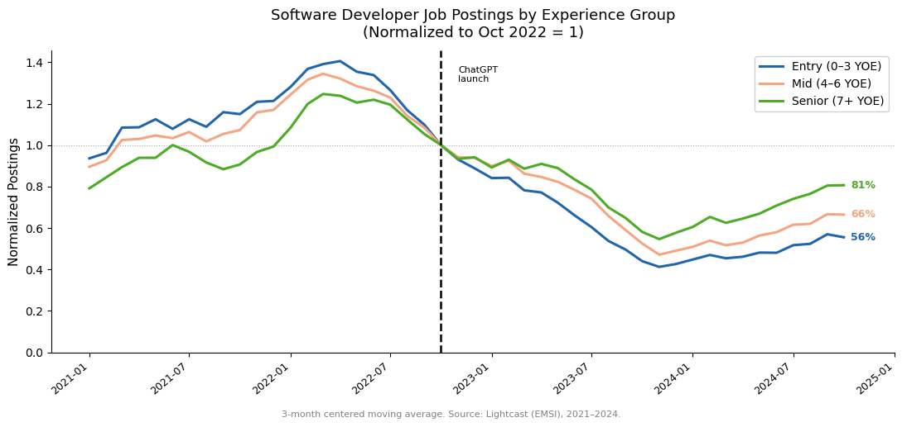
# ── Top 20 AI-exposed occupations in our Lightcast data ───────────────────
lightcast_occs = df_entry['occ_code'].unique()
top20 = (ai_exposure_combined[
ai_exposure_combined['occ_code'].isin(lightcast_occs)
]
.query('observed_exposure > 0')
[['occ_code','occupation_title','observed_exposure','gpt4_beta']]
.sort_values('observed_exposure', ascending=False)
.head(20)
.reset_index(drop=True))
top20.index += 1
print(top20.to_string()) occ_code occupation_title observed_exposure gpt4_beta
1 15-1251 Computer Programmers 0.7451 0.941176
2 43-4051 Customer Service Representatives 0.7011 0.566667
3 43-9021 Data Entry Keyers 0.6707 0.833333
4 29-2072 Medical Records Specialists 0.6674 0.617647
5 13-1161 Market Research Analysts and Marketing Specialists 0.6483 0.500000
6 31-9094 Medical Transcriptionists 0.6365 0.866667
7 41-4012 Sales Representatives, Wholesale and Manufacturing, Except Technical and Scientific Products 0.6279 0.605263
8 15-1243 Database Architects 0.5787 0.860000
9 13-2051 Financial and Investment Analysts 0.5716 0.461538
10 15-1253 Software Quality Assurance Analysts and Testers 0.5195 0.866667
11 43-9111 Statistical Assistants 0.5099 0.821429
12 15-1212 Information Security Analysts 0.4859 0.625000
13 15-1254 Web Developers 0.4802 0.931034
14 15-2099 Mathematical Science Occupations, All Other 0.4793 0.868421
15 27-3042 Technical Writers 0.4747 0.700000
16 15-1232 Computer User Support Specialists 0.4685 0.593750
17 43-9031 Desktop Publishers 0.4640 0.638889
18 15-2051 Data Scientists 0.4605 0.750000
19 27-3031 Public Relations Specialists 0.4530 0.583333
20 43-6014 Secretaries and Administrative Assistants, Except Legal, Medical, and Executive 0.4528 0.625000# ── Snowflake query: YOE buckets for top 20 AI-exposed occupations ─────────
import snowflake.connector as snow
import os
top20_codes = (ai_exposure_combined[
ai_exposure_combined['occ_code'].isin(df_entry['occ_code'].unique())]
.query('observed_exposure > 0')
.sort_values('observed_exposure', ascending=False)
.head(20)['occ_code'].tolist())
in_list = ','.join([f"'{c}'" for c in top20_codes])
conn = snow.connect(
user=os.environ["SNOWFLAKE_USER"],
password=os.environ["SNOWFLAKE_PASSWORD"],
account="avb99459.us-east-1",
warehouse="OPPORTUNITYATWORK_WH"
)
query = f"""
SELECT
date_trunc('month', p.posted)::date AS year_month,
p.soc_2021_5 AS soc,
CASE
WHEN p.min_years_experience <= 1 THEN '0-1 YOE'
WHEN p.min_years_experience <= 3 THEN '2-3 YOE'
WHEN p.min_years_experience <= 6 THEN '4-6 YOE'
WHEN p.min_years_experience <= 10 THEN '7-10 YOE'
WHEN p.min_years_experience > 10 THEN '11+ YOE'
ELSE 'Not Specified'
END AS yoe_group,
COUNT(DISTINCT p.id) AS postings
FROM emsi.us.postings p
WHERE p.soc_2021_5 IN ({in_list})
AND p.posted BETWEEN '2021-01-01' AND '2025-03-01'
GROUP BY ALL
ORDER BY 1, 2, 3
"""
df_yoe_top20 = pd.read_sql(query, conn)
conn.close()
df_yoe_top20.columns = df_yoe_top20.columns.str.lower()
df_yoe_top20['year_month'] = pd.to_datetime(df_yoe_top20['year_month'])
print(f"Rows: {df_yoe_top20.shape[0]:,} | Occupations: {df_yoe_top20['soc'].nunique()}")/var/folders/6h/l1_lq8b96y72mkslk3phrlpw0000gn/T/ipykernel_14240/3115904246.py:40: UserWarning: pandas only supports SQLAlchemy connectable (engine/connection) or database string URI or sqlite3 DBAPI2 connection. Other DBAPI2 objects are not tested. Please consider using SQLAlchemy.
df_yoe_top20 = pd.read_sql(query, conn)Rows: 5,363 | Occupations: 20import matplotlib.pyplot as plt
import matplotlib.dates as mdates
import seaborn as sns
bucket_map = {
'0-1 YOE': 'Entry (0–3 YOE)',
'2-3 YOE': 'Entry (0–3 YOE)',
'4-6 YOE': 'Mid (4–6 YOE)',
'7-10 YOE': 'Senior (7+ YOE)',
'11+ YOE': 'Senior (7+ YOE)',
}
base_date = pd.Timestamp('2022-10-01')
cutoff_date = pd.Timestamp('2024-10-01')
bucket_order = ['Entry (0–3 YOE)', 'Mid (4–6 YOE)', 'Senior (7+ YOE)']
colors = ['#2166ac', '#f4a582', '#4dac26']
def spread_labels(vals, min_gap=0.04):
indexed = sorted(enumerate(vals), key=lambda x: x[1])
adjusted = [v for _, v in indexed]
for i in range(1, len(adjusted)):
if adjusted[i] - adjusted[i-1] < min_gap:
adjusted[i] = adjusted[i-1] + min_gap
result = [None] * len(vals)
for rank, (orig_i, _) in enumerate(indexed):
result[orig_i] = adjusted[rank]
return result
df_occ = (
df_yoe_top20[df_yoe_top20['soc'] == '13-2051']
.assign(bucket=lambda d: d['yoe_group'].map(bucket_map))
.dropna(subset=['bucket'])
.groupby(['year_month', 'bucket'], as_index=False)['postings'].sum()
)
fig, ax = plt.subplots(figsize=(11, 5))
end_vals = []
last_x = None
for bucket, color in zip(bucket_order, colors):
grp = (df_occ[(df_occ['bucket'] == bucket) & (df_occ['year_month'] <= cutoff_date)]
.sort_values('year_month').reset_index(drop=True).copy())
if grp.empty:
continue
grp['smooth'] = grp['postings'].rolling(3, center=True, min_periods=1).mean()
base_val = grp.loc[grp['year_month'] == base_date, 'smooth']
if base_val.empty or base_val.values[0] == 0:
continue
grp['norm'] = grp['smooth'] / base_val.values[0]
ax.plot(grp['year_month'], grp['norm'], label=bucket, color=color, linewidth=2.2)
end_vals.append((grp['norm'].iloc[-1], color, f"{grp['norm'].iloc[-1]:.0%}"))
last_x = grp['year_month'].iloc[-1]
if end_vals and last_x:
raw_ys = [v[0] for v in end_vals]
adj_ys = spread_labels(raw_ys)
for (orig_y, color, label), adj_y in zip(end_vals, adj_ys):
ax.annotate(label,
xy=(last_x, orig_y),
xytext=(last_x + pd.DateOffset(months=1), adj_y),
fontsize=9, color=color, fontweight='bold', va='center',
arrowprops=dict(arrowstyle='-', color=color, lw=0.8) if abs(adj_y - orig_y) > 0.01 else None)
ax.axvline(base_date, color='black', linestyle='--', linewidth=1.8)
ax.axhline(1.0, color='gray', linestyle=':', linewidth=0.8, alpha=0.7)
ax.set_title('Financial and Investment Analysts — Job Postings by Experience Group\n(Normalized to Oct 2022 = 1)', fontsize=12)
ax.set_ylabel('Normalized Postings', fontsize=11)
ax.set_xlabel('')
ax.set_xlim(right=pd.Timestamp('2025-03-01'))
ax.xaxis.set_major_formatter(mdates.DateFormatter('%Y-%m'))
ax.xaxis.set_major_locator(mdates.MonthLocator(bymonth=[1, 7]))
plt.xticks(rotation=40, ha='right', fontsize=9)
ax.legend(fontsize=10, framealpha=0.9)
sns.despine()
fig.text(0.5, -0.02, '3-month centered moving average. Source: Lightcast (EMSI), 2021–2024.',
ha='center', fontsize=8, color='gray')
plt.tight_layout()
plt.savefig('/Users/khaliun/Documents/USF/ECON696/writeup/figures/yoe_finanalysts.png',
dpi=150, bbox_inches='tight')
plt.show()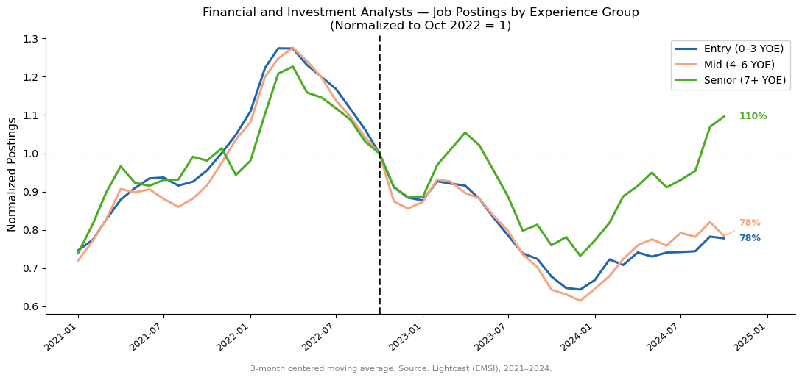
# Appendix: Market Research Analysts and Marketing Specialists (13-1161)
df_occ_mr = (
df_yoe_top20[df_yoe_top20['soc'] == '13-1161']
.assign(bucket=lambda d: d['yoe_group'].map(bucket_map))
.dropna(subset=['bucket'])
.groupby(['year_month', 'bucket'], as_index=False)['postings'].sum()
)
fig, ax = plt.subplots(figsize=(11, 5))
end_vals = []
last_x = None
for bucket, color in zip(bucket_order, colors):
grp = (df_occ_mr[(df_occ_mr['bucket'] == bucket) & (df_occ_mr['year_month'] <= cutoff_date)]
.sort_values('year_month').reset_index(drop=True).copy())
if grp.empty:
continue
grp['smooth'] = grp['postings'].rolling(3, center=True, min_periods=1).mean()
base_val = grp.loc[grp['year_month'] == base_date, 'smooth']
if base_val.empty or base_val.values[0] == 0:
continue
grp['norm'] = grp['smooth'] / base_val.values[0]
ax.plot(grp['year_month'], grp['norm'], label=bucket, color=color, linewidth=2.2)
end_vals.append((grp['norm'].iloc[-1], color, f"{grp['norm'].iloc[-1]:.0%}"))
last_x = grp['year_month'].iloc[-1]
if end_vals and last_x:
raw_ys = [v[0] for v in end_vals]
adj_ys = spread_labels(raw_ys)
for (orig_y, color, label), adj_y in zip(end_vals, adj_ys):
ax.annotate(label,
xy=(last_x, orig_y),
xytext=(last_x + pd.DateOffset(months=1), adj_y),
fontsize=9, color=color, fontweight='bold', va='center',
arrowprops=dict(arrowstyle='-', color=color, lw=0.8) if abs(adj_y - orig_y) > 0.01 else None)
ax.axvline(base_date, color='black', linestyle='--', linewidth=1.8)
ax.axhline(1.0, color='gray', linestyle=':', linewidth=0.8, alpha=0.7)
ax.set_title('Market Research Analysts — Job Postings by Experience Group\n(Normalized to Oct 2022 = 1)', fontsize=12)
ax.set_ylabel('Normalized Postings', fontsize=11)
ax.set_xlabel('')
ax.set_xlim(right=pd.Timestamp('2025-03-01'))
ax.xaxis.set_major_formatter(mdates.DateFormatter('%Y-%m'))
ax.xaxis.set_major_locator(mdates.MonthLocator(bymonth=[1, 7]))
plt.xticks(rotation=40, ha='right', fontsize=9)
ax.legend(fontsize=10, framealpha=0.9)
sns.despine()
fig.text(0.5, -0.02, '3-month centered moving average. Source: Lightcast (EMSI), 2021–2024.',
ha='center', fontsize=8, color='gray')
plt.tight_layout()
plt.savefig('/Users/khaliun/Documents/USF/ECON696/writeup/figures/yoe_mktresearch.png',
dpi=150, bbox_inches='tight')
plt.show()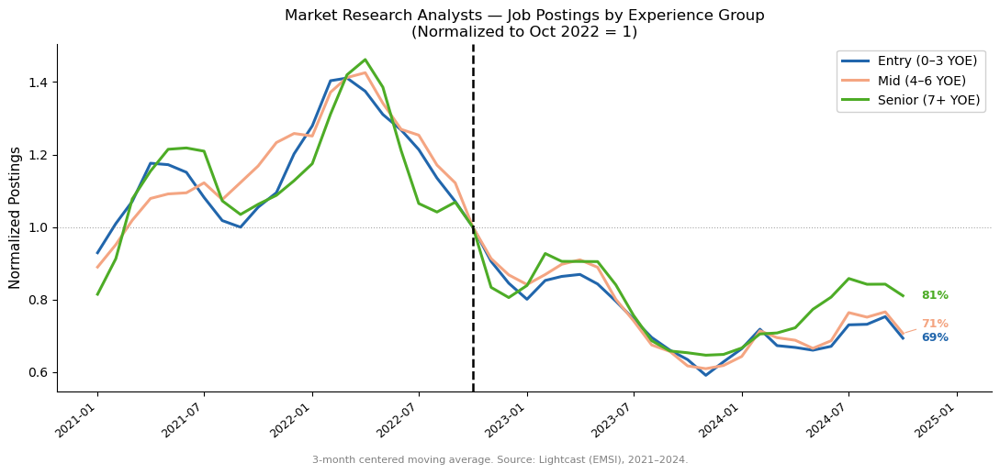
# ── Query: low-exposure contrast occupations ──────────────────────────────
low_exp_meta = {
'35-2014': 'Cooks, Restaurant',
}
in_list_low = ','.join([f"'{c}'" for c in low_exp_meta])
conn = snow.connect(
user=os.environ["SNOWFLAKE_USER"],
password=os.environ["SNOWFLAKE_PASSWORD"],
account="avb99459.us-east-1",
warehouse="OPPORTUNITYATWORK_WH"
)
query_low = f"""
SELECT
date_trunc('month', p.posted)::date AS year_month,
p.soc_2021_5 AS soc,
CASE
WHEN p.min_years_experience <= 1 THEN '0-1 YOE'
WHEN p.min_years_experience <= 3 THEN '2-3 YOE'
WHEN p.min_years_experience <= 6 THEN '4-6 YOE'
WHEN p.min_years_experience <= 10 THEN '7-10 YOE'
WHEN p.min_years_experience > 10 THEN '11+ YOE'
ELSE 'Not Specified'
END AS yoe_group,
COUNT(DISTINCT p.id) AS postings
FROM emsi.us.postings p
WHERE p.soc_2021_5 IN ({in_list_low})
AND p.posted BETWEEN '2021-01-01' AND '2025-03-01'
GROUP BY ALL
ORDER BY 1, 2, 3
"""
df_yoe_lowexp = pd.read_sql(query_low, conn)
conn.close()
df_yoe_lowexp.columns = df_yoe_lowexp.columns.str.lower()
df_yoe_lowexp['year_month'] = pd.to_datetime(df_yoe_lowexp['year_month'])
print(f"Rows: {df_yoe_lowexp.shape[0]:,} | Occupations found: {df_yoe_lowexp['soc'].nunique()}")
print("SOCs returned:", df_yoe_lowexp['soc'].unique())/var/folders/6h/l1_lq8b96y72mkslk3phrlpw0000gn/T/ipykernel_14240/1108452342.py:35: UserWarning: pandas only supports SQLAlchemy connectable (engine/connection) or database string URI or sqlite3 DBAPI2 connection. Other DBAPI2 objects are not tested. Please consider using SQLAlchemy.
df_yoe_lowexp = pd.read_sql(query_low, conn)Rows: 294 | Occupations found: 1
SOCs returned: ['35-2014']# ── Loop: YOE bucket charts for 3 low-exposure occupations ────────────────
bucket_map = {
'0-1 YOE': 'Entry (0–3 YOE)',
'2-3 YOE': 'Entry (0–3 YOE)',
'4-6 YOE': 'Mid (4–6 YOE)',
'7-10 YOE': 'Senior (7+ YOE)',
'11+ YOE': 'Senior (7+ YOE)',
}
bucket_order = ['Entry (0–3 YOE)', 'Mid (4–6 YOE)', 'Senior (7+ YOE)']
colors = ['#2166ac', '#f4a582', '#4dac26'] # blue, salmon, green
base_date = pd.Timestamp('2022-10-01')
cutoff_date = pd.Timestamp('2024-10-01')
for soc, title in low_exp_meta.items():
df_occ = (
df_yoe_lowexp[df_yoe_lowexp['soc'] == soc]
.assign(bucket=lambda d: d['yoe_group'].map(bucket_map))
.dropna(subset=['bucket'])
.groupby(['year_month', 'bucket'], as_index=False)['postings'].sum()
)
if df_occ.empty:
print(f"SKIP {soc} ({title}) — no data in Lightcast"); continue
fig, ax = plt.subplots(figsize=(11, 5))
end_vals = []
last_x = None
for bucket, color in zip(bucket_order, colors):
grp = (df_occ[(df_occ['bucket'] == bucket) & (df_occ['year_month'] <= cutoff_date)]
.sort_values('year_month').reset_index(drop=True).copy())
if grp.empty: continue
grp['smooth'] = grp['postings'].rolling(3, center=True, min_periods=1).mean()
base_val = grp.loc[grp['year_month'] == base_date, 'smooth']
if base_val.empty or base_val.values[0] == 0: continue
grp['norm'] = grp['smooth'] / base_val.values[0]
ax.plot(grp['year_month'], grp['norm'], label=bucket, color=color, linewidth=2.2)
end_vals.append((grp['norm'].iloc[-1], color, f"{grp['norm'].iloc[-1]:.0%}"))
last_x = grp['year_month'].iloc[-1]
if end_vals and last_x:
raw_ys = [v[0] for v in end_vals]
adj_ys = spread_labels(raw_ys)
for (orig_y, color, lbl), adj_y in zip(end_vals, adj_ys):
ax.annotate(lbl,
xy=(last_x, orig_y),
xytext=(last_x + pd.DateOffset(months=1), adj_y),
fontsize=9, color=color, fontweight='bold', va='center',
arrowprops=dict(arrowstyle='-', color=color, lw=0.8) if abs(adj_y - orig_y) > 0.01 else None)
ax.axvline(base_date, color='black', linestyle='--', linewidth=1.8)
ax.axhline(1.0, color='gray', linestyle=':', linewidth=0.8, alpha=0.7)
ax.set_title(f'{title} ({soc})\nJob Postings by Experience Group (Normalized to Oct 2022 = 1)',
fontsize=11)
ax.set_ylabel('Normalized Postings', fontsize=11)
ax.set_xlabel('')
ax.set_xlim(right=pd.Timestamp('2025-03-01'))
ax.xaxis.set_major_formatter(mdates.DateFormatter('%Y-%m'))
ax.xaxis.set_major_locator(mdates.MonthLocator(bymonth=[1, 7]))
plt.xticks(rotation=40, ha='right', fontsize=9)
ax.legend(fontsize=10, framealpha=0.9)
sns.despine()
fig.text(0.5, -0.02, '3-month centered moving average. Source: Lightcast (EMSI), 2021–2024.',
ha='center', fontsize=8, color='gray')
plt.tight_layout()
plt.show()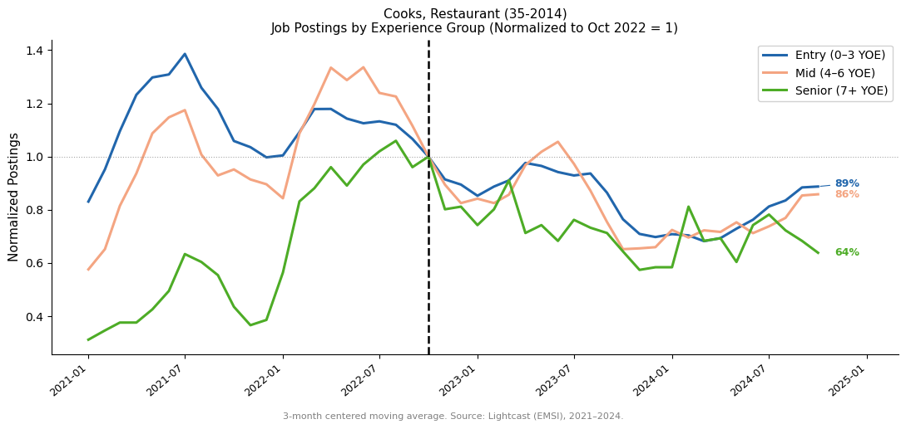
import snowflake.connector as snow
import os
conn = snow.connect(
user=os.environ["SNOWFLAKE_USER"],
password=os.environ["SNOWFLAKE_PASSWORD"],
account="avb99459.us-east-1",
warehouse="OPPORTUNITYATWORK_WH"
)
query = """
SELECT
date_trunc('month', p.posted)::date AS year_month,
p.soc_2021_5 AS occ_code,
COUNT(DISTINCT p.id) AS postings
FROM emsi.us.postings p
WHERE p.posted BETWEEN '2021-01-01' AND '2024-10-31'
AND p.soc_2021_5 IS NOT NULL
GROUP BY ALL
ORDER BY 1, 2
"""
df_all = pd.read_sql(query, conn)
conn.close()
df_all.columns = df_all.columns.str.lower()
df_all['year_month'] = pd.to_datetime(df_all['year_month'])
print(f"Rows: {df_all.shape[0]:,} | Occupations: {df_all['occ_code'].nunique()}")/var/folders/6h/l1_lq8b96y72mkslk3phrlpw0000gn/T/ipykernel_14240/4271867622.py:23: UserWarning: pandas only supports SQLAlchemy connectable (engine/connection) or database string URI or sqlite3 DBAPI2 connection. Other DBAPI2 objects are not tested. Please consider using SQLAlchemy.
df_all = pd.read_sql(query, conn)Rows: 34,914 | Occupations: 767import matplotlib.pyplot as plt
import matplotlib.dates as mdates
import seaborn as sns
# ── Assign observed_exposure quartiles (non-zero only) ─────────────────────
exposure_nz = (ai_exposure_combined[['occ_code', 'observed_exposure']]
.dropna()
.query('observed_exposure > 0')
.copy())
exposure_nz['quartile'] = pd.qcut(exposure_nz['observed_exposure'], 4, labels=['Q1', 'Q2', 'Q3', 'Q4'])
# ── Merge postings with quartile labels ────────────────────────────────────
df_q = (df_all
.merge(exposure_nz[['occ_code', 'quartile']], on='occ_code', how='inner')
.groupby(['year_month', 'quartile'], as_index=False)['postings'].sum())
# ── Smooth then normalize to Oct 2022 = 1 per quartile ────────────────────
base_date = pd.Timestamp('2022-10-01')
quartile_order = ['Q1', 'Q2', 'Q3', 'Q4']
colors = ['#4dac26', '#f1b300', '#f4a582', '#b2182b']
fig, ax = plt.subplots(figsize=(11, 5))
for q, color in zip(quartile_order, colors):
grp = (df_q[df_q['quartile'] == q]
.sort_values('year_month').reset_index(drop=True).copy())
grp['smooth'] = grp['postings'].rolling(3, center=True, min_periods=1).mean()
base_val = grp.loc[grp['year_month'] == base_date, 'smooth']
if base_val.empty or base_val.values[0] == 0:
continue
grp['norm'] = grp['smooth'] / base_val.values[0]
ax.plot(grp['year_month'], grp['norm'],
label=q, color=color, linewidth=2.0,
marker='o', markersize=3.5, zorder=2)
ax.axvline(base_date, color='black', linestyle='--', linewidth=1.8, zorder=3)
ax.axhline(1.0, color='gray', linestyle=':', linewidth=0.8, alpha=0.7)
ax.text(base_date + pd.DateOffset(months=1), 0.95,
'ChatGPT\nlaunch', fontsize=8, color='black', va='top',
transform=ax.get_xaxis_transform())
ax.set_title('Total Job Postings by AI Exposure Quartile\n(Normalized to Oct 2022 = 1)',
fontsize=13, pad=12)
ax.set_ylabel('Normalized Postings', fontsize=11)
ax.set_xlabel('')
ax.set_xlim(right=pd.Timestamp('2025-01-01'))
ax.xaxis.set_major_formatter(mdates.DateFormatter('%Y-%m'))
ax.xaxis.set_major_locator(mdates.MonthLocator(bymonth=[1, 7]))
plt.xticks(rotation=40, ha='right', fontsize=9)
ax.legend(title='AI Exposure\n(observed)', fontsize=10, framealpha=0.9)
ax.grid(axis='y', linewidth=0.4, alpha=0.5)
sns.despine()
fig.text(0.5, -0.02,
'Q1 = lowest, Q4 = highest observed AI exposure (non-zero only). 3-month centered moving average. Source: Lightcast (EMSI) + Anthropic Economic Index, 2021–2024.',
ha='center', fontsize=8, color='gray')
plt.tight_layout()
plt.savefig('/Users/khaliun/Documents/USF/ECON696/writeup/figures/postings_by_quartile_observed.png',
dpi=150, bbox_inches='tight')
plt.show()/var/folders/6h/l1_lq8b96y72mkslk3phrlpw0000gn/T/ipykernel_14240/1947748150.py:15: FutureWarning: The default of observed=False is deprecated and will be changed to True in a future version of pandas. Pass observed=False to retain current behavior or observed=True to adopt the future default and silence this warning.
.groupby(['year_month', 'quartile'], as_index=False)['postings'].sum())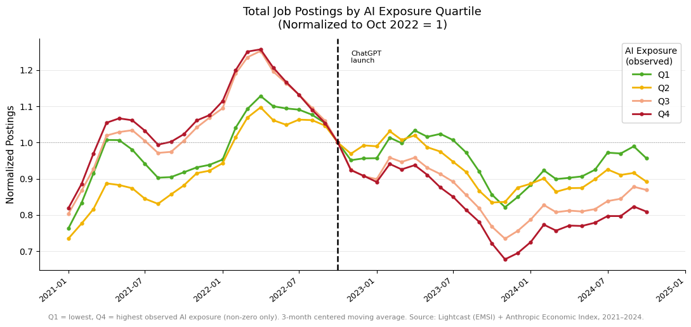
# ── Entry-level share by quartile: Snowflake query (3 definitions) ────────
import snowflake.connector as snow
import os
conn = snow.connect(
user=os.environ["SNOWFLAKE_USER"],
password=os.environ["SNOWFLAKE_PASSWORD"],
account="avb99459.us-east-1",
warehouse="OPPORTUNITYATWORK_WH"
)
query = """
SELECT
date_trunc('month', p.posted)::date AS year_month,
p.soc_2021_5 AS occ_code,
COUNT(DISTINCT p.id) AS total_postings,
-- Main def: YOE <= 2 OR (Junior + NULL YOE), edu <= Bachelor's
COUNT(DISTINCT CASE
WHEN (p.min_years_experience <= 2
OR (p.job_seniority_name = 'Junior' AND p.min_years_experience IS NULL))
AND (p.min_edulevels_name IS NULL
OR p.min_edulevels_name NOT IN ('Master''s Degree','Doctoral or Professional Degree'))
THEN p.id END) AS entry_main,
-- Strict YOE < 2 only (no NULL handling)
COUNT(DISTINCT CASE
WHEN p.min_years_experience < 2
AND (p.min_edulevels_name IS NULL
OR p.min_edulevels_name NOT IN ('Master''s Degree','Doctoral or Professional Degree'))
THEN p.id END) AS entry_lt2,
-- Burning Glass style: YOE < 3 only (no NULL handling)
COUNT(DISTINCT CASE
WHEN p.min_years_experience < 3
AND (p.min_edulevels_name IS NULL
OR p.min_edulevels_name NOT IN ('Master''s Degree','Doctoral or Professional Degree'))
THEN p.id END) AS entry_lt3
FROM emsi.us.postings p
WHERE p.posted BETWEEN '2021-01-01' AND '2024-10-31'
AND p.soc_2021_5 IS NOT NULL
GROUP BY ALL
ORDER BY 1, 2
"""
df_entry = pd.read_sql(query, conn)
conn.close()
df_entry.columns = df_entry.columns.str.lower()
df_entry['year_month'] = pd.to_datetime(df_entry['year_month'])
tot = df_entry['total_postings'].sum()
print(f"Rows: {df_entry.shape[0]:,} | Occupations: {df_entry['occ_code'].nunique()}")
print(f"Entry share — main: {df_entry['entry_main'].sum()/tot:.1%} | <2 YOE: {df_entry['entry_lt2'].sum()/tot:.1%} | <3 YOE: {df_entry['entry_lt3'].sum()/tot:.1%}")/var/folders/6h/l1_lq8b96y72mkslk3phrlpw0000gn/T/ipykernel_14240/3452734063.py:47: UserWarning: pandas only supports SQLAlchemy connectable (engine/connection) or database string URI or sqlite3 DBAPI2 connection. Other DBAPI2 objects are not tested. Please consider using SQLAlchemy.
df_entry = pd.read_sql(query, conn)Rows: 34,914 | Occupations: 767
Entry share — main: 26.8% | <2 YOE: 15.1% | <3 YOE: 24.6%import matplotlib.pyplot as plt
import matplotlib.dates as mdates
import seaborn as sns
# ── Assign observed_exposure quartiles (non-zero only) ─────────────────────
exposure_nz = (ai_exposure_combined[['occ_code', 'observed_exposure']]
.dropna().query('observed_exposure > 0').copy())
exposure_nz['quartile'] = pd.qcut(exposure_nz['observed_exposure'], 4, labels=['Q1', 'Q2', 'Q3', 'Q4'])
df_merged = df_entry.merge(exposure_nz[['occ_code', 'quartile']], on='occ_code', how='inner')
definitions = [
('entry_main', 'Main (YOE ≤ 2 or Junior+NULL)', 'entry_share_by_quartile_main.png'),
('entry_lt2', 'Strict (YOE < 2 only)', 'entry_share_by_quartile_lt2.png'),
('entry_lt3', 'Broad (YOE < 3 only)', 'entry_share_by_quartile_lt3.png'),
]
base_date = pd.Timestamp('2022-10-01')
quartile_order = ['Q1', 'Q2', 'Q3', 'Q4']
colors = ['#4dac26', '#f1b300', '#f4a582', '#b2182b']
for col, label, fname in definitions:
df_q = (df_merged
.groupby(['year_month', 'quartile'], as_index=False)
[[col, 'total_postings']].sum())
df_q['entry_share'] = df_q[col] / df_q['total_postings']
fig, ax = plt.subplots(figsize=(11, 5))
for q, color in zip(quartile_order, colors):
grp = (df_q[df_q['quartile'] == q]
.sort_values('year_month').reset_index(drop=True).copy())
grp['smooth'] = grp['entry_share'].rolling(3, center=True, min_periods=1).mean()
base_val = grp.loc[grp['year_month'] == base_date, 'smooth']
if base_val.empty or base_val.values[0] == 0:
continue
grp['norm'] = grp['smooth'] / base_val.values[0]
ax.plot(grp['year_month'], grp['norm'],
label=q, color=color, linewidth=2.0,
marker='o', markersize=3.5, zorder=2)
ax.axvline(base_date, color='black', linestyle='--', linewidth=1.8, zorder=3)
ax.axhline(1.0, color='gray', linestyle=':', linewidth=0.8, alpha=0.7)
ax.text(base_date + pd.DateOffset(months=1), 0.95,
'ChatGPT\nlaunch', fontsize=8, color='black', va='top',
transform=ax.get_xaxis_transform())
ax.set_title(f'Entry-Level Share of Job Postings by AI Exposure Quartile\n{label} — Normalized to Oct 2022 = 1',
fontsize=12, pad=12)
ax.set_ylabel('Normalized Entry-Level Share', fontsize=11)
ax.set_xlabel('')
ax.set_xlim(right=pd.Timestamp('2025-01-01'))
ax.xaxis.set_major_formatter(mdates.DateFormatter('%Y-%m'))
ax.xaxis.set_major_locator(mdates.MonthLocator(bymonth=[1, 7]))
plt.xticks(rotation=40, ha='right', fontsize=9)
ax.legend(title='AI Exposure\n(observed)', fontsize=10, framealpha=0.9)
ax.grid(axis='y', linewidth=0.4, alpha=0.5)
sns.despine()
fig.text(0.5, -0.02,
'Q1 = lowest, Q4 = highest observed AI exposure. 3-month centered moving average. Source: Lightcast + Anthropic Economic Index.',
ha='center', fontsize=8, color='gray')
plt.tight_layout()
plt.savefig(f'/Users/khaliun/Documents/USF/ECON696/writeup/figures/{fname}', dpi=150, bbox_inches='tight')
plt.show()
print(f"Saved → {fname}")/var/folders/6h/l1_lq8b96y72mkslk3phrlpw0000gn/T/ipykernel_14240/1274512511.py:24: FutureWarning: The default of observed=False is deprecated and will be changed to True in a future version of pandas. Pass observed=False to retain current behavior or observed=True to adopt the future default and silence this warning.
.groupby(['year_month', 'quartile'], as_index=False)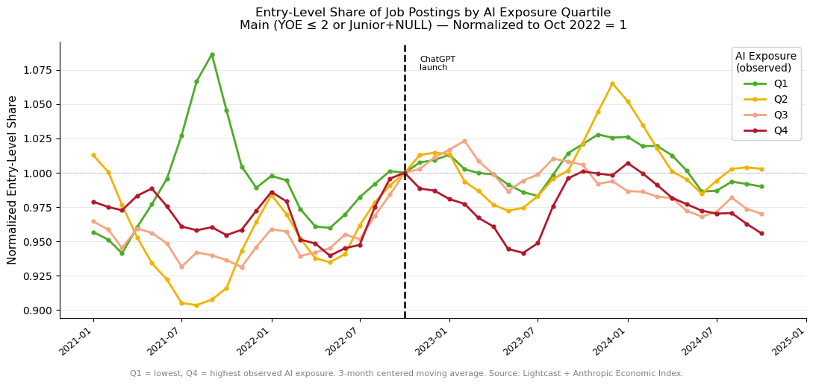
Saved → entry_share_by_quartile_main.png/var/folders/6h/l1_lq8b96y72mkslk3phrlpw0000gn/T/ipykernel_14240/1274512511.py:24: FutureWarning: The default of observed=False is deprecated and will be changed to True in a future version of pandas. Pass observed=False to retain current behavior or observed=True to adopt the future default and silence this warning.
.groupby(['year_month', 'quartile'], as_index=False)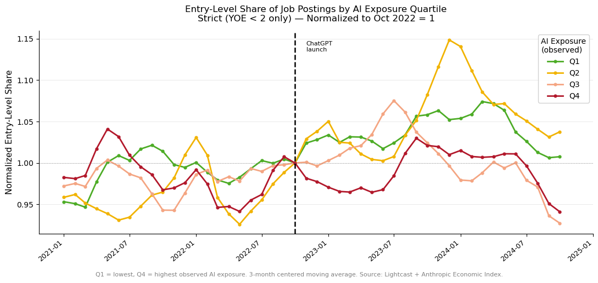
Saved → entry_share_by_quartile_lt2.png/var/folders/6h/l1_lq8b96y72mkslk3phrlpw0000gn/T/ipykernel_14240/1274512511.py:24: FutureWarning: The default of observed=False is deprecated and will be changed to True in a future version of pandas. Pass observed=False to retain current behavior or observed=True to adopt the future default and silence this warning.
.groupby(['year_month', 'quartile'], as_index=False)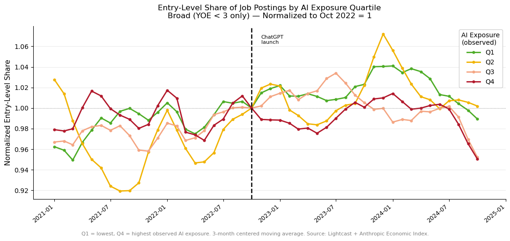
Saved → entry_share_by_quartile_lt3.png# ── Canaries-style figure: query all occupations × YOE bucket × month ────
import snowflake.connector as snow
import os
conn = snow.connect(
user=os.environ["SNOWFLAKE_USER"],
password=os.environ["SNOWFLAKE_PASSWORD"],
account="avb99459.us-east-1",
warehouse="OPPORTUNITYATWORK_WH"
)
query_yoe_all = """
SELECT
date_trunc('month', p.posted)::date AS year_month,
p.soc_2021_5 AS soc,
CASE
WHEN p.min_years_experience <= 3 THEN 'Entry (0–3 YOE)'
WHEN p.min_years_experience <= 6 THEN 'Mid (4–6 YOE)'
WHEN p.min_years_experience > 6 THEN 'Senior (7+ YOE)'
END AS yoe_bucket,
COUNT(DISTINCT p.id) AS postings
FROM emsi.us.postings p
WHERE p.posted BETWEEN '2021-01-01' AND '2025-03-01'
AND p.soc_2021_5 IS NOT NULL
AND p.min_years_experience IS NOT NULL
AND p.min_edulevels_name IN ('No Education Listed', 'High school or GED', 'Associate degree', 'Bachelor''''s Degree')
GROUP BY ALL
ORDER BY 1, 2, 3
"""
df_yoe_all = pd.read_sql(query_yoe_all, conn)
conn.close()
df_yoe_all.columns = df_yoe_all.columns.str.lower()
df_yoe_all['year_month'] = pd.to_datetime(df_yoe_all['year_month'])
print(f"Rows: {df_yoe_all.shape[0]:,} | Occupations: {df_yoe_all['soc'].nunique()}")/var/folders/6h/l1_lq8b96y72mkslk3phrlpw0000gn/T/ipykernel_14240/1831168202.py:31: UserWarning: pandas only supports SQLAlchemy connectable (engine/connection) or database string URI or sqlite3 DBAPI2 connection. Other DBAPI2 objects are not tested. Please consider using SQLAlchemy.
df_yoe_all = pd.read_sql(query_yoe_all, conn)Rows: 100,512 | Occupations: 765# ── Canaries-style panel plot: observed_exposure (Anthropic index) version ─
import matplotlib.pyplot as plt
import matplotlib.dates as mdates
import seaborn as sns
from matplotlib.lines import Line2D
# ── 2021 weights from FULL universe ───────────────────────────────────────
weights_2021 = (df_all[df_all['year_month'].dt.year == 2021]
.groupby('occ_code', as_index=False)['postings'].sum()
.rename(columns={'postings': 'w_2021', 'occ_code': 'soc'}))
weights_2021['w_2021_pct'] = weights_2021['w_2021'] / weights_2021['w_2021'].sum()
# ── observed_exposure quintiles (non-zero only) ───────────────────────────
obs_q = (ai_exposure_combined[['occ_code', 'observed_exposure']]
.dropna()
.query('observed_exposure > 0')
.copy())
obs_q['quintile'] = pd.qcut(obs_q['observed_exposure'], 5,
labels=['Q1', 'Q2', 'Q3', 'Q4', 'Q5'])
# ── Merge YOE data with quintile labels AND full-universe weights ──────────
df_merged_obs = (df_yoe_all
.merge(obs_q[['occ_code', 'quintile']],
left_on='soc', right_on='occ_code', how='inner')
.merge(weights_2021[['soc', 'w_2021_pct']], on='soc', how='left'))
df_merged_obs['wt_postings'] = df_merged_obs['postings'] * df_merged_obs['w_2021_pct']
base_date = pd.Timestamp('2022-10-01')
cutoff_date = pd.Timestamp('2024-10-01')
buckets = ['Entry (0\u20133 YOE)', 'Mid (4\u20136 YOE)', 'Senior (7+ YOE)']
quintile_order = ['Q1', 'Q2', 'Q3', 'Q4', 'Q5']
grays = ['#d0d0d0', '#a0a0a0', '#707070', '#404040', '#101010']
fig, axes = plt.subplots(3, 1, figsize=(11, 13), sharey=False)
for ax, bucket in zip(axes, buckets):
df_b = df_merged_obs[
(df_merged_obs['yoe_bucket'] == bucket) &
(df_merged_obs['year_month'] <= cutoff_date)
]
# Overall line (red)
overall = (df_b.groupby('year_month', as_index=False)['wt_postings'].sum()
.sort_values('year_month').reset_index(drop=True))
overall['smooth'] = overall['wt_postings'].rolling(3, center=True, min_periods=1).mean()
base_val = overall.loc[overall['year_month'] == base_date, 'smooth']
if not base_val.empty and base_val.values[0] != 0:
overall['norm'] = overall['smooth'] / base_val.values[0]
ax.plot(overall['year_month'], overall['norm'],
color='#d62728', linewidth=1.8, zorder=5)
# Quintile lines
for q, color in zip(quintile_order, grays):
grp = (df_b[df_b['quintile'] == q]
.groupby('year_month', as_index=False)['wt_postings'].sum()
.sort_values('year_month').reset_index(drop=True))
if grp.empty: continue
grp['smooth'] = grp['wt_postings'].rolling(3, center=True, min_periods=1).mean()
base_val = grp.loc[grp['year_month'] == base_date, 'smooth']
if base_val.empty or base_val.values[0] == 0: continue
grp['norm'] = grp['smooth'] / base_val.values[0]
ax.plot(grp['year_month'], grp['norm'],
color=color, linewidth=1.2, zorder=3)
ax.axvline(base_date, color='black', linestyle='--', linewidth=1.2)
ax.axhline(1.0, color='gray', linestyle=':', linewidth=0.7, alpha=0.7)
ax.set_title(bucket, fontsize=11)
ax.set_xlabel('Date', fontsize=9)
ax.set_ylabel('Normalized Postings (2021-weighted)', fontsize=10)
ax.xaxis.set_major_formatter(mdates.DateFormatter('%Y-%m'))
ax.xaxis.set_major_locator(mdates.MonthLocator(bymonth=[1, 7]))
plt.setp(ax.xaxis.get_majorticklabels(), rotation=40, ha='right', fontsize=8)
sns.despine(ax=ax)
legend_els = [
Line2D([0], [0], color=grays[0], lw=1.2, label='Less exposed (Q1)'),
Line2D([0], [0], color=grays[-1], lw=1.2, label='More exposed (Q5)'),
Line2D([0], [0], color='#d62728', lw=1.8, label='Overall'),
]
ax.legend(handles=legend_els, fontsize=8, framealpha=0.9, loc='lower left')
fig.suptitle(
'Job Postings by Experience Level and AI Exposure Quintile\n'
'(Normalized to Oct 2022 = 1 | Anthropic observed exposure, darker = more exposed\n'
'Weighted by 2021 total postings to match full occupation distribution)',
fontsize=11, y=1.01
)
plt.tight_layout()
plt.savefig('/Users/khaliun/Documents/USF/ECON696/writeup/figures/canaries_style_yoe_observed.png',
dpi=150, bbox_inches='tight')
plt.show()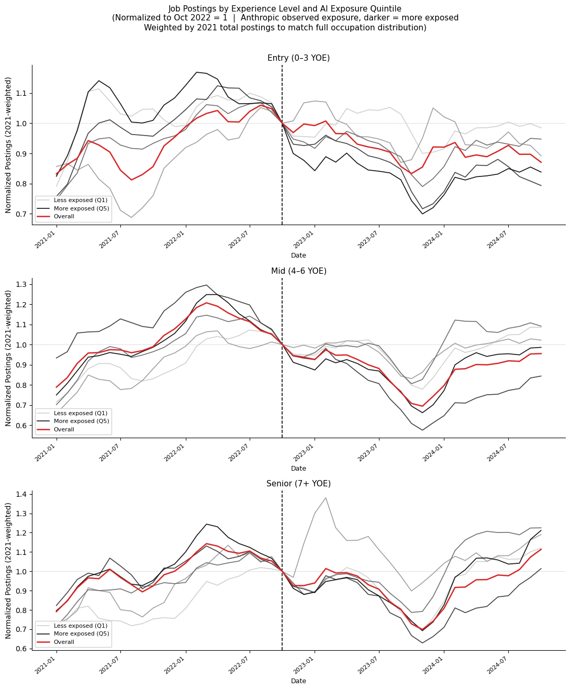
# ── Canaries Fact 3: automation & augmentation 1×3 grids (no 11+ YOE) ────
import matplotlib.pyplot as plt
import matplotlib.dates as mdates
import seaborn as sns
from matplotlib.lines import Line2D
weights_2021 = (df_all[df_all['year_month'].dt.year == 2021]
.groupby('occ_code', as_index=False)['postings'].sum()
.rename(columns={'postings': 'w_2021', 'occ_code': 'soc'}))
weights_2021['w_2021_pct'] = weights_2021['w_2021'] / weights_2021['w_2021'].sum()
base_date, cutoff_date = pd.Timestamp('2022-10-01'), pd.Timestamp('2024-10-01')
bucket_order = ['0-3 YOE', '4-6 YOE', '7-10 YOE']
quintile_order = ['Q1', 'Q2', 'Q3', 'Q4', 'Q5']
grays = ['#d0d0d0', '#a0a0a0', '#707070', '#404040', '#101010']
measures = [
('automation_weighted_ratio', 'Automation Exposure (Brynjolfsson et al.)', 'canaries_fact3_automation.png'),
('augmentation_weighted_ratio', 'Augmentation Exposure (Brynjolfsson et al.)', 'canaries_fact3_augmentation.png'),
]
for col, label, fname in measures:
exp_q = ai_exposure_combined[['occ_code', col]].dropna().copy()
exp_q = exp_q[exp_q[col] > 0]
exp_q['quintile'] = pd.qcut(exp_q[col], 5, labels=['Q1','Q2','Q3','Q4','Q5'])
df_merged = (df_yoe_occ
.merge(exp_q[['occ_code','quintile']], left_on='soc', right_on='occ_code', how='inner')
.merge(weights_2021[['soc','w_2021_pct']], on='soc', how='left'))
df_merged['wt_postings'] = df_merged['postings'] * df_merged['w_2021_pct']
fig, axes = plt.subplots(1, 3, figsize=(15, 5), sharey=False)
for ax, bucket in zip(axes, bucket_order):
df_b = df_merged[(df_merged['yoe_bucket'] == bucket) &
(df_merged['year_month'] <= cutoff_date)]
overall = (df_b.groupby('year_month', as_index=False)['wt_postings'].sum()
.sort_values('year_month').reset_index(drop=True))
overall['smooth'] = overall['wt_postings'].rolling(3, center=True, min_periods=1).mean()
base_val = overall.loc[overall['year_month'] == base_date, 'smooth']
if not base_val.empty and base_val.values[0] != 0:
overall['norm'] = overall['smooth'] / base_val.values[0]
ax.plot(overall['year_month'], overall['norm'], color='#d62728', linewidth=1.8, zorder=5)
for q, color in zip(quintile_order, grays):
grp = (df_b[df_b['quintile'] == q]
.groupby('year_month', as_index=False)['wt_postings'].sum()
.sort_values('year_month').reset_index(drop=True))
if grp.empty: continue
grp['smooth'] = grp['wt_postings'].rolling(3, center=True, min_periods=1).mean()
base_val = grp.loc[grp['year_month'] == base_date, 'smooth']
if base_val.empty or base_val.values[0] == 0: continue
grp['norm'] = grp['smooth'] / base_val.values[0]
ax.plot(grp['year_month'], grp['norm'], color=color, linewidth=1.2, zorder=3)
ax.axvline(base_date, color='black', linestyle='--', linewidth=1.2)
ax.axhline(1.0, color='gray', linestyle=':', linewidth=0.7, alpha=0.7)
ax.set_title(bucket, fontsize=11)
ax.set_xlabel('Date', fontsize=8)
ax.set_ylabel('Normalized Postings' if ax is axes[0] else '', fontsize=9)
ax.xaxis.set_major_formatter(mdates.DateFormatter('%Y-%m'))
ax.xaxis.set_major_locator(mdates.MonthLocator(bymonth=[1, 7]))
plt.setp(ax.xaxis.get_majorticklabels(), rotation=40, ha='right', fontsize=7)
sns.despine(ax=ax)
ax.legend(handles=[
Line2D([0],[0], color=grays[0], lw=1.2, label='Less exposed'),
Line2D([0],[0], color=grays[-1], lw=1.2, label='More exposed'),
Line2D([0],[0], color='#d62728', lw=1.8, label='Overall'),
], fontsize=7, framealpha=0.9, loc='lower left')
fig.suptitle(
f'Job Postings by Experience Level and {label}\n'
'(Normalized to Oct 2022 = 1 | Quintiles, darker = more exposed | Weighted by 2021 total postings)',
fontsize=12, y=1.02)
plt.tight_layout()
plt.savefig(f'/Users/khaliun/Documents/USF/ECON696/writeup/figures/{fname}',
dpi=150, bbox_inches='tight')
plt.show()
print(f"Saved → {fname}")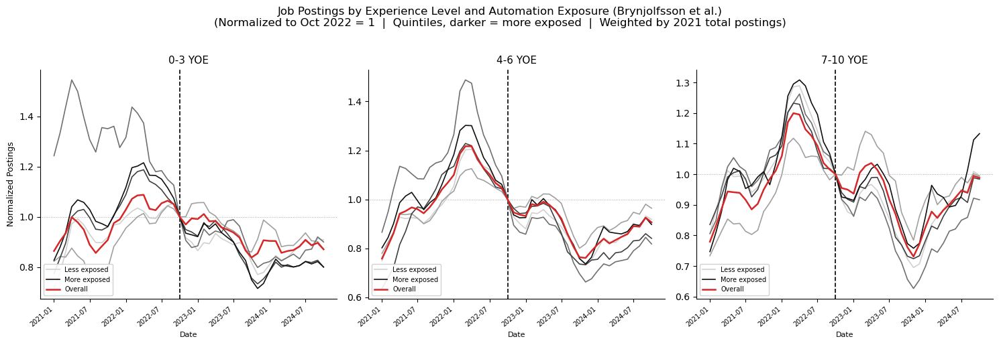
Saved → canaries_fact3_automation.png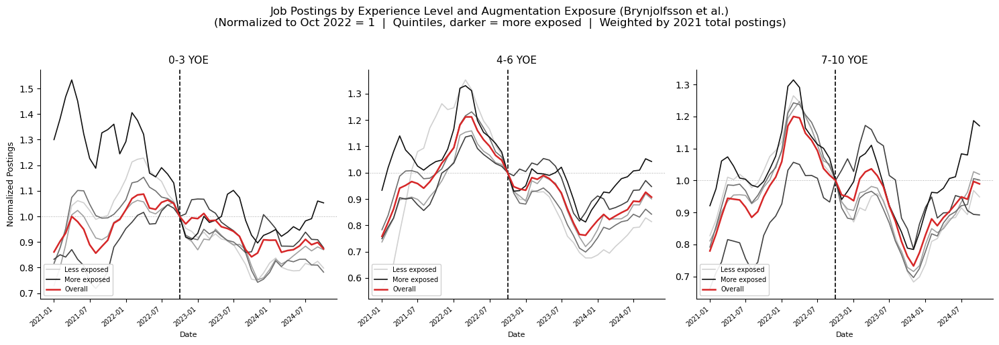
Saved → canaries_fact3_augmentation.png# ── Fact 2 analog: postings by YOE bucket, normalized to 2021 avg ───────
import snowflake.connector as snow, os
conn = snow.connect(user=os.environ["SNOWFLAKE_USER"], password=os.environ["SNOWFLAKE_PASSWORD"],
account="avb99459.us-east-1", warehouse="OPPORTUNITYATWORK_WH")
df_fact2 = pd.read_sql("""
SELECT date_trunc('month', p.posted)::date AS year_month,
CASE WHEN p.min_years_experience <= 1 THEN '0-1 YOE'
WHEN p.min_years_experience <= 3 THEN '2-3 YOE'
WHEN p.min_years_experience <= 6 THEN '4-6 YOE'
WHEN p.min_years_experience <= 10 THEN '7-10 YOE'
WHEN p.min_years_experience > 10 THEN '11+ YOE'
END AS yoe_bucket,
COUNT(DISTINCT p.id) AS postings
FROM emsi.us.postings p
WHERE p.posted BETWEEN '2021-01-01' AND '2025-03-01'
AND p.min_years_experience IS NOT NULL
GROUP BY ALL
HAVING yoe_bucket IS NOT NULL
ORDER BY 1, 2
""", conn)
conn.close()
df_fact2.columns = df_fact2.columns.str.lower()
df_fact2['year_month'] = pd.to_datetime(df_fact2['year_month'])
print(df_fact2['yoe_bucket'].value_counts())
print(f'Months: {df_fact2["year_month"].nunique()}')/var/folders/6h/l1_lq8b96y72mkslk3phrlpw0000gn/T/ipykernel_14240/3131222660.py:7: UserWarning: pandas only supports SQLAlchemy connectable (engine/connection) or database string URI or sqlite3 DBAPI2 connection. Other DBAPI2 objects are not tested. Please consider using SQLAlchemy.
df_fact2 = pd.read_sql("""yoe_bucket
0-1 YOE 51
11+ YOE 51
2-3 YOE 51
4-6 YOE 51
7-10 YOE 51
Name: count, dtype: int64
Months: 51# ── Fact 2 analog: 4-bucket version (0-3 combined) ─────────────────────
import matplotlib.pyplot as plt, matplotlib.dates as mdates, seaborn as sns
remap = {'0-1 YOE': '0-3 YOE', '2-3 YOE': '0-3 YOE',
'4-6 YOE': '4-6 YOE', '7-10 YOE': '7-10 YOE', '11+ YOE': '11+ YOE'}
df_4b = (df_fact2
.assign(bucket=lambda d: d['yoe_bucket'].map(remap))
.groupby(['year_month', 'bucket'], as_index=False)['postings'].sum())
bucket_order = ['0-3 YOE', '4-6 YOE', '7-10 YOE', '11+ YOE']
colors = ['#2166ac', '#4dac26', '#d6604d', '#8b1a1a']
base_date = pd.Timestamp('2022-10-01')
cutoff_date = pd.Timestamp('2024-10-01')
fig, ax = plt.subplots(figsize=(12, 6))
for bucket, color in zip(bucket_order, colors):
grp = (df_4b[df_4b['bucket'] == bucket]
.sort_values('year_month').copy())
if grp.empty: continue
grp['smooth'] = grp['postings'].rolling(3, center=True, min_periods=1).mean()
base_val = grp[grp['year_month'].dt.year == 2021]['smooth'].mean()
if base_val == 0: continue
grp['norm'] = grp['smooth'] / base_val
grp = grp[grp['year_month'] <= cutoff_date]
ax.plot(grp['year_month'], grp['norm'], label=bucket, color=color, linewidth=2.2)
ax.axvline(base_date, color='black', linestyle='--', linewidth=1.8)
ax.text(base_date + pd.DateOffset(months=1), ax.get_ylim()[0] + 0.02,
'ChatGPT\nlaunch', fontsize=9, color='black')
ax.axhline(1.0, color='gray', linestyle=':', linewidth=0.8, alpha=0.7)
ax.set_title('Job Postings Over Time by Experience Level\n'
'(Normalized to 2021 Average = 1)',
fontsize=13)
ax.set_ylabel('Normalized Postings', fontsize=11)
ax.set_xlabel('Date', fontsize=10)
ax.set_xlim(right=cutoff_date)
ax.xaxis.set_major_formatter(mdates.DateFormatter('%Y-%m'))
ax.xaxis.set_major_locator(mdates.MonthLocator(bymonth=[1, 4, 7, 10]))
plt.xticks(rotation=40, ha='right', fontsize=9)
ax.legend(fontsize=10, framealpha=0.9, loc='upper left')
sns.despine()
fig.text(0.5, -0.02,
'3-month centered moving average. Only postings with specified YOE. Source: Lightcast (EMSI), 2021–2024.',
ha='center', fontsize=8, color='gray')
plt.tight_layout()
plt.savefig('/Users/khaliun/Documents/USF/ECON696/slide_figures/postings_by_yoe_fact2_4bucket.png',
dpi=150, bbox_inches='tight')
plt.savefig('/Users/khaliun/Documents/USF/ECON696/writeup/figures/postings_by_yoe_fact2_4bucket.png',
dpi=150, bbox_inches='tight')
plt.show()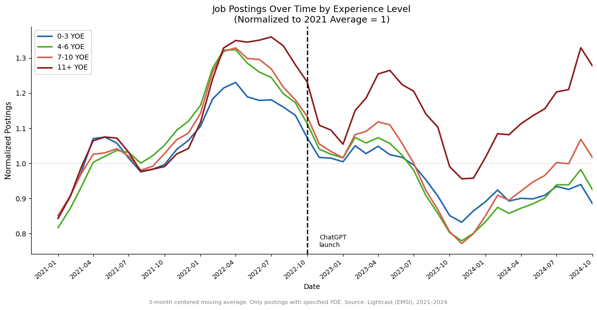
# ── Entry-level only: Automation vs Augmentation side by side ────────────
import matplotlib.pyplot as plt, matplotlib.dates as mdates, seaborn as sns
from matplotlib.lines import Line2D
weights_2021 = (df_all[df_all['year_month'].dt.year == 2021]
.groupby('occ_code', as_index=False)['postings'].sum()
.rename(columns={'postings': 'w_2021', 'occ_code': 'soc'}))
weights_2021['w_2021_pct'] = weights_2021['w_2021'] / weights_2021['w_2021'].sum()
base_date, cutoff_date = pd.Timestamp('2022-10-01'), pd.Timestamp('2024-10-01')
quintile_order = ['Q1', 'Q2', 'Q3', 'Q4', 'Q5']
grays = ['#d0d0d0', '#a0a0a0', '#707070', '#404040', '#101010']
measures = [
('automation_weighted_ratio', 'Automation Exposure'),
('augmentation_weighted_ratio', 'Augmentation Exposure'),
]
fig, axes = plt.subplots(1, 2, figsize=(14, 5), sharey=False)
for ax, (col, label) in zip(axes, measures):
exp_q = ai_exposure_combined[['occ_code', col]].dropna().copy()
exp_q = exp_q[exp_q[col] > 0]
exp_q['quintile'] = pd.qcut(exp_q[col], 5, labels=['Q1','Q2','Q3','Q4','Q5'])
df_merged = (df_yoe_occ[df_yoe_occ['yoe_bucket'] == '0-3 YOE']
.merge(exp_q[['occ_code','quintile']], left_on='soc', right_on='occ_code', how='inner')
.merge(weights_2021[['soc','w_2021_pct']], on='soc', how='left'))
df_merged['wt_postings'] = df_merged['postings'] * df_merged['w_2021_pct']
df_merged = df_merged[df_merged['year_month'] <= cutoff_date]
# Overall line
ov = df_merged.groupby('year_month', as_index=False)['wt_postings'].sum().sort_values('year_month')
ov['smooth'] = ov['wt_postings'].rolling(3, center=True, min_periods=1).mean()
bv = ov.loc[ov['year_month'] == base_date, 'smooth']
if not bv.empty and bv.values[0] != 0:
ov['norm'] = ov['smooth'] / bv.values[0]
ax.plot(ov['year_month'], ov['norm'], color='#d62728', linewidth=1.8, zorder=5)
# Quintile lines
for q, color in zip(quintile_order, grays):
g = (df_merged[df_merged['quintile'] == q]
.groupby('year_month', as_index=False)['wt_postings'].sum()
.sort_values('year_month'))
if g.empty: continue
g['smooth'] = g['wt_postings'].rolling(3, center=True, min_periods=1).mean()
bv = g.loc[g['year_month'] == base_date, 'smooth']
if bv.empty or bv.values[0] == 0: continue
g['norm'] = g['smooth'] / bv.values[0]
ax.plot(g['year_month'], g['norm'], color=color, linewidth=1.2, zorder=3)
ax.axvline(base_date, color='black', linestyle='--', linewidth=1.2)
ax.axhline(1.0, color='gray', linestyle=':', linewidth=0.7, alpha=0.7)
ax.set_title(f'0-3 YOE | {label}', fontsize=11)
ax.set_xlabel('Date', fontsize=9)
ax.set_ylabel('Normalized Postings (2021-weighted)', fontsize=9)
ax.xaxis.set_major_formatter(mdates.DateFormatter('%Y-%m'))
ax.xaxis.set_major_locator(mdates.MonthLocator(bymonth=[1, 7]))
plt.setp(ax.xaxis.get_majorticklabels(), rotation=40, ha='right', fontsize=8)
sns.despine(ax=ax)
ax.legend(handles=[
Line2D([0],[0], color=grays[0], lw=1.2, label='Less exposed (Q1)'),
Line2D([0],[0], color=grays[-1], lw=1.2, label='More exposed (Q5)'),
Line2D([0],[0], color='#d62728', lw=1.8, label='Overall'),
], fontsize=8, framealpha=0.9, loc='lower left')
fig.suptitle('Entry-Level (0-3 YOE) Job Postings by Exposure Quintile\n'
'(Normalized to Oct 2022 = 1 | Darker = more exposed | Weighted by 2021 total postings)',
fontsize=12, y=1.02)
plt.tight_layout()
plt.savefig('/Users/khaliun/Documents/USF/ECON696/writeup/figures/canaries_entry_auto_aug.png',
dpi=150, bbox_inches='tight')
plt.show()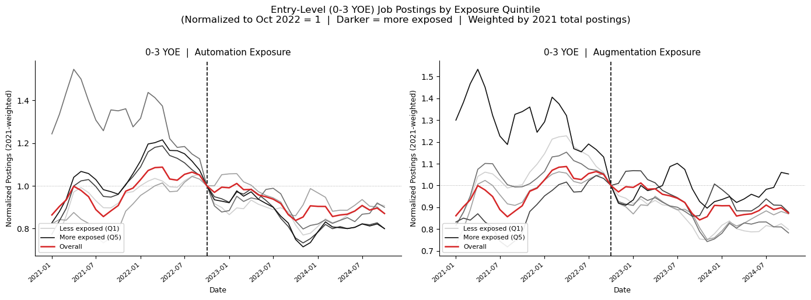
# ── DiD Regression — Step 1: Query entry-level share by occupation-month ──
# Y = entry_level_pct: what % of postings in an occupation-month are entry-level
# Entry-level = YOE ≤ 2 OR (Junior seniority + NULL YOE)
# Universe: education ≤ Bachelor's, 2020-2024
import snowflake.connector as snow, os
conn = snow.connect(user=os.environ['SNOWFLAKE_USER'], password=os.environ['SNOWFLAKE_PASSWORD'],
account='avb99459.us-east-1', warehouse='OPPORTUNITYATWORK_WH')
df_did = pd.read_sql("""
SELECT date_trunc('month', p.posted)::date AS year_month,
p.soc_2021_5 AS occ_code,
COUNT(DISTINCT p.id) AS total_postings,
COUNT(DISTINCT CASE
WHEN p.min_years_experience <= 2
OR (p.min_years_experience IS NULL AND p.job_seniority_name = 'Junior')
THEN p.id END) AS entry_postings
FROM emsi.us.postings p
WHERE p.posted BETWEEN '2020-01-01' AND '2025-03-01'
AND p.soc_2021_5 IS NOT NULL
AND p.min_edulevels_name IN ('No Education Listed', 'High school or GED', 'Associate degree', 'Bachelor''''s Degree')
GROUP BY 1, 2
ORDER BY 1, 2
""", conn)
conn.close()
df_did.columns = df_did.columns.str.lower()
df_did['year_month'] = pd.to_datetime(df_did['year_month'])
df_did['entry_level_pct'] = df_did['entry_postings'] / df_did['total_postings'] * 100
print(f'Rows: {len(df_did):,} | Occupations: {df_did["occ_code"].nunique()} | Months: {df_did["year_month"].nunique()}')
print(df_did.head())/var/folders/6h/l1_lq8b96y72mkslk3phrlpw0000gn/T/ipykernel_14240/677815552.py:10: UserWarning: pandas only supports SQLAlchemy connectable (engine/connection) or database string URI or sqlite3 DBAPI2 connection. Other DBAPI2 objects are not tested. Please consider using SQLAlchemy.
df_did = pd.read_sql("""Rows: 47,515 | Occupations: 767 | Months: 63
year_month occ_code total_postings entry_postings entry_level_pct
0 2020-01-01 11-1011 2239 680 30.370701
1 2020-01-01 11-1021 18676 7048 37.738274
2 2020-01-01 11-2011 262 76 29.007634
3 2020-01-01 11-2021 8311 967 11.635182
4 2020-01-01 11-2022 16302 2900 17.789228# ── DiD — Step 2: Merge exposure + weights, create post, seasonal-adjust Y ─
# gpt4_beta: Eloundou et al. (2023) — task-level GPT-4 exposure, pre-ChatGPT
# → preferred treatment: time-invariant, not endogenous to firm adoption
# w_2021: occupation's 2021 posting share — bigger occupations get more weight
# post: 1 after Oct 2022 (ChatGPT launch), 0 before
# entry_sa: seasonally adjusted Y — OLS residuals on month dummies + grand mean
import statsmodels.formula.api as smf, numpy as np
gpt4 = pd.read_csv('/Users/khaliun/Documents/USF/ECON696/ai_exposure.csv')
gpt4['occ_code'] = gpt4['O*NET-SOC Code'].str[:7]
gpt4 = gpt4[['occ_code', 'gpt4_beta']].drop_duplicates('occ_code')
df_did = df_did.merge(gpt4, on='occ_code', how='left')
w2021 = (df_did[df_did['year_month'].dt.year == 2021]
.groupby('occ_code', as_index=False)['total_postings'].sum()
.rename(columns={'total_postings': 'tot_2021'}))
w2021['w_2021'] = w2021['tot_2021'] / w2021['tot_2021'].sum()
df_did = df_did.merge(w2021[['occ_code', 'w_2021']], on='occ_code', how='left')
df_did['post'] = (df_did['year_month'] >= pd.Timestamp('2022-10-01')).astype(int)
df_did['ym_str'] = df_did['year_month'].dt.strftime('%Y-%m')
df_reg = df_did.dropna(subset=['entry_level_pct', 'gpt4_beta', 'w_2021']).copy()
df_reg['month_str'] = df_reg['year_month'].dt.month.astype(str)
sa_model = smf.wls('entry_level_pct ~ C(month_str)', data=df_reg,
weights=df_reg['w_2021']).fit()
df_reg['entry_sa'] = sa_model.resid + df_reg['entry_level_pct'].mean()
print(f'N for regression: {len(df_reg):,} | Occupations: {df_reg["occ_code"].nunique()}')
print(f'entry_sa — mean: {df_reg["entry_sa"].mean():.1f}% std: {df_reg["entry_sa"].std():.1f}%')
print(f'gpt4_beta — mean: {df_reg["gpt4_beta"].mean():.2f} range: [{df_reg["gpt4_beta"].min():.2f}, {df_reg["gpt4_beta"].max():.2f}]')N for regression: 45,436 | Occupations: 733
entry_sa — mean: 23.0% std: 13.9%
gpt4_beta — mean: 0.32 range: [0.00, 1.00]# ── DiD — Step 3: Construct rate_sensitivity_i (pre-period OLS per occ) ────
# rate_sensitivity: how much an occupation's hiring responds to ΔFFR
# → measured in pre-period (Jan 2020 – Sep 2022) ONLY
# → OLS: posting_pct_change ~ delta_FFR per occupation
# Why this survives two-way FEs:
# FFR level is the same for all occs each month → absorbed by γ_t
# But sensitivity (the coefficient) varies across occupations → NOT absorbed
# Construction, real estate = high sensitivity; software = low sensitivity
ffr_dict = {
'2020-01': 1.54, '2020-02': 1.58, '2020-03': 0.65, '2020-04': 0.05,
'2020-05': 0.05, '2020-06': 0.08, '2020-07': 0.09, '2020-08': 0.10,
'2020-09': 0.09, '2020-10': 0.09, '2020-11': 0.09, '2020-12': 0.09,
'2021-01': 0.07, '2021-02': 0.07, '2021-03': 0.07, '2021-04': 0.06,
'2021-05': 0.06, '2021-06': 0.06, '2021-07': 0.07, '2021-08': 0.08,
'2021-09': 0.08, '2021-10': 0.08, '2021-11': 0.08, '2021-12': 0.08,
'2022-01': 0.08, '2022-02': 0.08, '2022-03': 0.20, '2022-04': 0.33,
'2022-05': 0.77, '2022-06': 1.21, '2022-07': 1.68, '2022-08': 2.33,
'2022-09': 3.08,
}
ffr = (pd.DataFrame(list(ffr_dict.items()), columns=['ym_str', 'ffr'])
.assign(year_month=lambda d: pd.to_datetime(d['ym_str']))
.assign(delta_ffr=lambda d: d['ffr'].diff()))
pre_cutoff = pd.Timestamp('2022-10-01')
df_pre = (df_reg[df_reg['year_month'] < pre_cutoff]
.sort_values(['occ_code', 'year_month'])
.merge(ffr[['year_month', 'delta_ffr']], on='year_month', how='left'))
df_pre['posting_pct_chg'] = (df_pre.groupby('occ_code')['total_postings']
.pct_change() * 100)
sensitivity = []
for occ, grp in df_pre.dropna(subset=['posting_pct_chg', 'delta_ffr']).groupby('occ_code'):
if len(grp) < 12: continue
m = smf.ols('posting_pct_chg ~ delta_ffr', data=grp).fit()
sensitivity.append({'occ_code': occ, 'rate_sensitivity': m.params['delta_ffr']})
df_sens = pd.DataFrame(sensitivity)
p01, p99 = df_sens['rate_sensitivity'].quantile([0.01, 0.99])
df_sens['rate_sensitivity'] = df_sens['rate_sensitivity'].clip(p01, p99)
print(f'Rate sensitivity computed for {len(df_sens)} occupations')
print(df_sens['rate_sensitivity'].describe().round(2))Rate sensitivity computed for 729 occupations
count 729.00
mean 2.63
std 17.48
min -97.59
25% -2.44
50% 4.40
75% 10.54
max 47.23
Name: rate_sensitivity, dtype: float64# ── DiD — Step 4: AI exposure vs rate sensitivity scatter ───────────────────
# Replicates Brynjolfsson et al. Figure A22
# Key insight: AI-exposed occupations are LESS rate-sensitive
# → Omitting rate sensitivity ATTENUATES β (biases toward zero)
# → Controlling for it should INCREASE the AI coefficient
import matplotlib.pyplot as plt, seaborn as sns
scatter_df = df_reg.drop_duplicates('occ_code').merge(df_sens, on='occ_code', how='inner')
corr = scatter_df[['gpt4_beta', 'rate_sensitivity']].corr().iloc[0, 1]
fig, ax = plt.subplots(figsize=(8, 5))
ax.scatter(scatter_df['gpt4_beta'], scatter_df['rate_sensitivity'],
alpha=0.35, s=18, color='steelblue', edgecolors='none')
xs = np.linspace(scatter_df['gpt4_beta'].min(), scatter_df['gpt4_beta'].max(), 100)
m_scatter = smf.ols('rate_sensitivity ~ gpt4_beta', data=scatter_df).fit()
ax.plot(xs, m_scatter.predict(pd.DataFrame({'gpt4_beta': xs})),
color='#d62728', linewidth=1.8)
ax.axhline(0, color='gray', linestyle=':', linewidth=0.7)
ax.set_xlabel('AI Exposure (gpt4_beta)', fontsize=10)
ax.set_ylabel('Rate Sensitivity\n(posting % change per 1pp ΔFFR, pre-2022)', fontsize=10)
ax.set_title(f'AI Exposure and Interest Rate Sensitivity are Negatively Correlated (r = {corr:.2f})',
fontsize=11)
sns.despine(ax=ax)
plt.tight_layout()
plt.savefig('/Users/khaliun/Documents/USF/ECON696/writeup/figures/ai_vs_rate_sensitivity.png',
dpi=150, bbox_inches='tight')
plt.show()
print(f'r = {corr:.3f} → AI-exposed occupations are less rate-sensitive')
print('Omitting this control biases β toward zero (attenuates AI estimate)')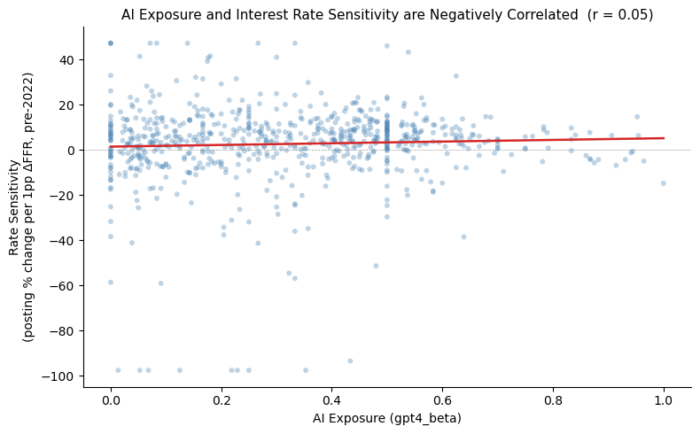
r = 0.047 → AI-exposed occupations are less rate-sensitive
Omitting this control biases β toward zero (attenuates AI estimate)# ── DiD — Step 5: Main regression (two-way FE, WLS, clustered SEs) ─────────
#
# EntryShare_it = β·(Post_t × GPT4Exp_i) + α_i + γ_t + ε_it
#
# Y = entry_sa seasonally adjusted entry-level share (%)
# β = post:gpt4_beta ← the DiD estimator: differential post-ChatGPT
# change per unit of AI exposure
# α_i = C(occ_code) occupation FE — absorbs permanent cross-occ differences
# γ_t = C(ym_str) time FE — absorbs all common macro shocks each month
# Weights = w_2021 2021 posting share (larger occs get more weight)
# SEs = clustered by occupation (serial correlation within occ over time)
model_main = smf.wls(
'entry_sa ~ post:gpt4_beta + C(occ_code) + C(ym_str)',
data=df_reg, weights=df_reg['w_2021']
).fit(cov_type='cluster', cov_kwds={'groups': df_reg['occ_code']})
c1_, se1_, p1_ = (model_main.params['post:gpt4_beta'],
model_main.bse['post:gpt4_beta'],
model_main.pvalues['post:gpt4_beta'])
ci1_ = model_main.conf_int().loc['post:gpt4_beta']
print('Spec 1 — Main (YOE≤2 + Junior+NULL, edu≤Bachelor\'s)')
print(f' β = {c1_:.3f} SE = {se1_:.3f} p = {p1_:.3f} 95% CI = [{ci1_[0]:.3f}, {ci1_[1]:.3f}]')
print(f' N obs: {int(model_main.nobs):,} | N occupations: {df_reg["occ_code"].nunique()}')
print()
print('Benchmark: Software Dev (gpt4=0.94) vs Truck Driver (gpt4=0.04)')
print(f' → {(0.94-0.04)*c1_:+.3f} pp differential decline in entry-level share post-ChatGPT')Spec 1 — Main (YOE≤2 + Junior+NULL, edu≤Bachelor's)
β = -1.729 SE = 0.898 p = 0.054 95% CI = [-3.490, 0.032]
N obs: 45,436 | N occupations: 733
Benchmark: Software Dev (gpt4=0.94) vs Truck Driver (gpt4=0.04)
→ -1.556 pp differential decline in entry-level share post-ChatGPT# ── DiD — Step 6: + demand shock control (post × avg_demand_change_post_i) ─
# avg_demand_change_post: occupation's avg 12m posting % change in the post-period
# Why we need it:
# Tech postings fell ~40% after 2022 (layoffs) — this hits high-AI occupations
# γ_t absorbs common monthly shocks, NOT occupation-specific divergence
# If we don't control for this, β might capture 'tech collapsed' not 'AI cut entry'
# Correlation with gpt4_beta: r ≈ -0.18 → mostly separate variation
demand = (df_reg.sort_values(['occ_code', 'year_month'])
.assign(pct_chg=lambda d: d.groupby('occ_code')['total_postings'].pct_change(12) * 100)
.query('post == 1')
.groupby('occ_code')['pct_chg'].mean()
.reset_index()
.rename(columns={'pct_chg': 'avg_demand_change_post'}))
df_ds = df_reg.merge(demand, on='occ_code', how='left').dropna(
subset=['entry_sa', 'gpt4_beta', 'w_2021', 'avg_demand_change_post'])
model_ds = smf.wls(
'entry_sa ~ post:gpt4_beta + post:avg_demand_change_post + C(occ_code) + C(ym_str)',
data=df_ds, weights=df_ds['w_2021']
).fit(cov_type='cluster', cov_kwds={'groups': df_ds['occ_code']})
c2_, se2_, p2_ = (model_ds.params['post:gpt4_beta'],
model_ds.bse['post:gpt4_beta'],
model_ds.pvalues['post:gpt4_beta'])
ci2_ = model_ds.conf_int().loc['post:gpt4_beta']
corr_d = demand.merge(df_reg.drop_duplicates('occ_code')[['occ_code','gpt4_beta']],
on='occ_code')[['avg_demand_change_post','gpt4_beta']].corr().iloc[0,1]
print('Spec 2 — + demand shock control')
print(f' β = {c2_:.3f} SE = {se2_:.3f} p = {p2_:.3f} 95% CI = [{ci2_[0]:.3f}, {ci2_[1]:.3f}]')
print(f' Corr(demand_change, gpt4_beta) = {corr_d:.3f} (near-zero → separate variation)')Spec 2 — + demand shock control
β = -1.732 SE = 0.909 p = 0.057 95% CI = [-3.514, 0.049]
Corr(demand_change, gpt4_beta) = -0.148 (near-zero → separate variation)# ── DiD — Step 7: + rate sensitivity control (post × rate_sensitivity_i) ───
# Why adding this INCREASES β (the key robustness result):
# AI-exposed occs are LESS rate-sensitive (r < 0, see scatter above)
# Rate hike 2022-23 hurt low-AI, high-rate-sensitive sectors (construction)
# Without control: those sectors show RISING entry share → attenuates our β
# With control: the AI effect is isolated from the rate-cycle effect
# → β gets larger, p improves: this rules out 'it's the rate hike, not AI'
df_rate = df_ds.merge(df_sens, on='occ_code', how='inner').dropna(
subset=['entry_sa', 'gpt4_beta', 'w_2021', 'avg_demand_change_post', 'rate_sensitivity'])
model_rate = smf.wls(
'entry_sa ~ post:gpt4_beta + post:avg_demand_change_post + post:rate_sensitivity'
' + C(occ_code) + C(ym_str)',
data=df_rate, weights=df_rate['w_2021']
).fit(cov_type='cluster', cov_kwds={'groups': df_rate['occ_code']})
c3_, se3_, p3_ = (model_rate.params['post:gpt4_beta'],
model_rate.bse['post:gpt4_beta'],
model_rate.pvalues['post:gpt4_beta'])
ci3_ = model_rate.conf_int().loc['post:gpt4_beta']
print('Spec 3 — + demand shock + rate sensitivity')
print(f' β = {c3_:.3f} SE = {se3_:.3f} p = {p3_:.3f} 95% CI = [{ci3_[0]:.3f}, {ci3_[1]:.3f}]')
print()
print('Key result: β becomes MORE negative after adding rate control')
print('→ interest rates were attenuating, not inflating, the AI estimate')Spec 3 — + demand shock + rate sensitivity
β = -1.979 SE = 0.844 p = 0.019 95% CI = [-3.632, -0.326]
Key result: β becomes MORE negative after adding rate control
→ interest rates were attenuating, not inflating, the AI estimate# ── DiD — Step 7b: + rate sensitivity ONLY (no demand shock control) ───────
# Isolates the rate-cycle effect independently before combining controls
# Shows β moves even when demand shock is not included
df_rate_only = df_reg.merge(df_sens, on='occ_code', how='inner').dropna(
subset=['entry_sa', 'gpt4_beta', 'w_2021', 'rate_sensitivity'])
model_rate_only = smf.wls(
'entry_sa ~ post:gpt4_beta + post:rate_sensitivity + C(occ_code) + C(ym_str)',
data=df_rate_only, weights=df_rate_only['w_2021']
).fit(cov_type='cluster', cov_kwds={'groups': df_rate_only['occ_code']})
c_ro, se_ro, p_ro = (model_rate_only.params['post:gpt4_beta'],
model_rate_only.bse['post:gpt4_beta'],
model_rate_only.pvalues['post:gpt4_beta'])
ci_ro = model_rate_only.conf_int().loc['post:gpt4_beta']
print('Spec 3 — + rate sensitivity ONLY')
print(f' β = {c_ro:.3f} SE = {se_ro:.3f} p = {p_ro:.3f} 95% CI = [{ci_ro[0]:.3f}, {ci_ro[1]:.3f}]')Spec 3 — + rate sensitivity ONLY
β = -1.926 SE = 0.824 p = 0.019 95% CI = [-3.540, -0.312]# ── DiD — Summary table (2 specifications) ───────────────────────────────────
results = pd.DataFrame([
{"Specification": "(1) Main DiD",
"β": round(c1_, 3), "SE": round(se1_, 3), "p": round(p1_, 3),
"95% CI": f"[{ci1_[0]:.3f}, {ci1_[1]:.3f}]"},
{"Specification": "(2) + rate sensitivity control",
"β": round(c_ro, 3), "SE": round(se_ro, 3), "p": round(p_ro, 3),
"95% CI": f"[{ci_ro[0]:.3f}, {ci_ro[1]:.3f}]"},
])
print("DiD Results — Effect of AI Exposure on Entry-Level Posting Share")
print("Y = entry_sa (seasonally adjusted, %) | Treatment = gpt4_beta (0-1 scale)")
print("All: occupation + time FEs, WLS (2021 weights), SEs clustered by occupation")
print()
print(results.to_string(index=False))
print()
print(f"Benchmark: Software Dev (0.94) vs Truck Driver (0.04) → 0.90 unit gap in treatment")
print(f" Key spec implied gap: 0.90 × {c_ro:.3f} = {0.90*c_ro:.3f} pp differential decline")
print()
print("Note: demand shock control excluded — β unchanged (−1.729 → −1.732), adds no explanatory value")DiD Results — Effect of AI Exposure on Entry-Level Posting Share
Y = entry_sa (seasonally adjusted, %) | Treatment = gpt4_beta (0-1 scale)
All: occupation + time FEs, WLS (2021 weights), SEs clustered by occupation
Specification β SE p 95% CI
(1) Main DiD -1.729 0.898 0.054 [-3.490, 0.032]
(2) + rate sensitivity control -1.926 0.824 0.019 [-3.540, -0.312]
Benchmark: Software Dev (0.94) vs Truck Driver (0.04) → 0.90 unit gap in treatment
Key spec implied gap: 0.90 × -1.926 = -1.733 pp differential decline
Note: demand shock control excluded — β unchanged (−1.729 → −1.732), adds no explanatory value# ── Robustness: DiD with observed_exposure (Anthropic Economic Index) ────────
# observed_exposure = actual Claude usage at occupation level (post-ChatGPT)
# Caveat: partially endogenous — measured after ChatGPT launch, so firms that
# already cut entry-level hiring may have adopted AI more → use as directional check only
# If both gpt4_beta and observed_exposure give negative β, the story is consistent
anthro = pd.read_csv('/Users/khaliun/Documents/USF/ECON696/ai_exposure_combined.csv')
anthro = anthro[['occ_code', 'observed_exposure']].dropna().drop_duplicates('occ_code')
df_obs = df_reg.merge(anthro, on='occ_code', how='inner').dropna(
subset=['entry_sa', 'observed_exposure', 'w_2021'])
print(f'N for observed_exposure regression: {len(df_obs):,} | Occupations: {df_obs["occ_code"].nunique()}')
print(f'observed_exposure — mean: {df_obs["observed_exposure"].mean():.3f} range: [{df_obs["observed_exposure"].min():.3f}, {df_obs["observed_exposure"].max():.3f}]')
model_obs_main = smf.wls(
'entry_sa ~ post:observed_exposure + C(occ_code) + C(ym_str)',
data=df_obs, weights=df_obs['w_2021']
).fit(cov_type='cluster', cov_kwds={'groups': df_obs['occ_code']})
c_o1, se_o1, p_o1 = (model_obs_main.params['post:observed_exposure'],
model_obs_main.bse['post:observed_exposure'],
model_obs_main.pvalues['post:observed_exposure'])
ci_o1 = model_obs_main.conf_int().loc['post:observed_exposure']
print()
print('Spec 1 — observed_exposure, Main DiD')
print(f' β = {c_o1:.3f} SE = {se_o1:.3f} p = {p_o1:.3f} 95% CI = [{ci_o1[0]:.3f}, {ci_o1[1]:.3f}]')N for observed_exposure regression: 44,403 | Occupations: 716
observed_exposure — mean: 0.074 range: [0.000, 0.745]
Spec 1 — observed_exposure, Main DiD
β = -2.243 SE = 0.921 p = 0.015 95% CI = [-4.047, -0.439]# ── Robustness: observed_exposure DiD + rate sensitivity control ─────────────
df_obs_rate = df_obs.merge(df_sens, on='occ_code', how='inner').dropna(
subset=['entry_sa', 'observed_exposure', 'w_2021', 'rate_sensitivity'])
model_obs_rate = smf.wls(
'entry_sa ~ post:observed_exposure + post:rate_sensitivity + C(occ_code) + C(ym_str)',
data=df_obs_rate, weights=df_obs_rate['w_2021']
).fit(cov_type='cluster', cov_kwds={'groups': df_obs_rate['occ_code']})
c_o2, se_o2, p_o2 = (model_obs_rate.params['post:observed_exposure'],
model_obs_rate.bse['post:observed_exposure'],
model_obs_rate.pvalues['post:observed_exposure'])
ci_o2 = model_obs_rate.conf_int().loc['post:observed_exposure']
print('Spec 2 — observed_exposure + rate sensitivity')
print(f' β = {c_o2:.3f} SE = {se_o2:.3f} p = {p_o2:.3f} 95% CI = [{ci_o2[0]:.3f}, {ci_o2[1]:.3f}]')Spec 2 — observed_exposure + rate sensitivity
β = -2.426 SE = 0.889 p = 0.006 95% CI = [-4.169, -0.684]#Regression results:
# ── Robustness summary: observed_exposure vs gpt4_beta ──────────────────────
rob = pd.DataFrame([
{'Treatment': 'gpt4_beta (Eloundou et al.)',
'Specification': '(1) Main DiD',
'β': round(c1_, 3), 'SE': round(se1_, 3), 'p': round(p1_, 3),
'95% CI': f'[{ci1_[0]:.3f}, {ci1_[1]:.3f}]'},
{'Treatment': 'gpt4_beta (Eloundou et al.)',
'Specification': '(2) + rate sensitivity',
'β': round(c_ro, 3), 'SE': round(se_ro, 3), 'p': round(p_ro, 3),
'95% CI': f'[{ci_ro[0]:.3f}, {ci_ro[1]:.3f}]'},
{'Treatment': 'observed_exposure (Anthropic)',
'Specification': '(1) Main DiD',
'β': round(c_o1, 3), 'SE': round(se_o1, 3), 'p': round(p_o1, 3),
'95% CI': f'[{ci_o1[0]:.3f}, {ci_o1[1]:.3f}]'},
{'Treatment': 'observed_exposure (Anthropic)',
'Specification': '(2) + rate sensitivity',
'β': round(c_o2, 3), 'SE': round(se_o2, 3), 'p': round(p_o2, 3),
'95% CI': f'[{ci_o2[0]:.3f}, {ci_o2[1]:.3f}]'},
])
print('Robustness — Two AI Exposure Measures')
print('Y = entry_sa | occupation + time FEs | WLS | SEs clustered by occupation')
print('gpt4_beta: ChatGPT task exposure | observed_exposure: claude usage')
print()
print(rob.to_string(index=False))
print()
if c_o1 < 0 and c_o2 < 0:
print('✓ Both measures negative — directionally consistent')
else:
print('! Signs differ — check overlap between measures')Robustness — Two AI Exposure Measures
Y = entry_sa | occupation + time FEs | WLS | SEs clustered by occupation
gpt4_beta: ChatGPT task exposure | observed_exposure: claude usage
Treatment Specification β SE p 95% CI
gpt4_beta (Eloundou et al.) (1) Main DiD -1.729 0.898 0.054 [-3.490, 0.032]
gpt4_beta (Eloundou et al.) (2) + rate sensitivity -1.926 0.824 0.019 [-3.540, -0.312]
observed_exposure (Anthropic) (1) Main DiD -2.243 0.921 0.015 [-4.047, -0.439]
observed_exposure (Anthropic) (2) + rate sensitivity -2.426 0.889 0.006 [-4.169, -0.684]
✓ Both measures negative — directionally consistent# ── NULL YOE Check: what % of postings have no YOE specified? ───────────────
# Key question: did high-AI firms increasingly drop YOE requirements post-ChatGPT?
import snowflake.connector as snow, os
conn = snow.connect(user=os.environ["SNOWFLAKE_USER"], password=os.environ["SNOWFLAKE_PASSWORD"],
account="avb99459.us-east-1", warehouse="OPPORTUNITYATWORK_WH")
df_null = pd.read_sql("""
SELECT 'Overall' AS grp,
CASE WHEN p.posted < '2022-10-01' THEN 'Pre-ChatGPT (2021-Sep 2022)'
ELSE 'Post-ChatGPT (Oct 2022-2024)' END AS period,
COUNT(DISTINCT p.id) AS total_postings,
COUNT(DISTINCT CASE WHEN p.min_years_experience IS NULL THEN p.id END) AS null_yoe,
ROUND(100.0 * COUNT(DISTINCT CASE WHEN p.min_years_experience IS NULL THEN p.id END)
/ NULLIF(COUNT(DISTINCT p.id),0), 1) AS pct_null_yoe
FROM emsi.us.postings p
WHERE p.posted BETWEEN '2021-01-01' AND '2024-10-01'
AND p.min_edulevels_name IN ('No Education Listed', 'High school or GED', 'Associate degree', 'Bachelor''''s Degree')
GROUP BY 2
UNION ALL
SELECT 'Software Developers (15-1252)' AS grp,
CASE WHEN p.posted < '2022-10-01' THEN 'Pre-ChatGPT (2021-Sep 2022)'
ELSE 'Post-ChatGPT (Oct 2022-2024)' END AS period,
COUNT(DISTINCT p.id),
COUNT(DISTINCT CASE WHEN p.min_years_experience IS NULL THEN p.id END),
ROUND(100.0 * COUNT(DISTINCT CASE WHEN p.min_years_experience IS NULL THEN p.id END)
/ NULLIF(COUNT(DISTINCT p.id),0), 1)
FROM emsi.us.postings p
WHERE p.posted BETWEEN '2021-01-01' AND '2024-10-01'
AND p.soc_2021_5 = '15-1252'
AND p.min_edulevels_name IN ('No Education Listed', 'High school or GED', 'Associate degree', 'Bachelor''''s Degree')
GROUP BY 2
UNION ALL
SELECT 'Finance & Accounting (13-2XXX)' AS grp,
CASE WHEN p.posted < '2022-10-01' THEN 'Pre-ChatGPT (2021-Sep 2022)'
ELSE 'Post-ChatGPT (Oct 2022-2024)' END AS period,
COUNT(DISTINCT p.id),
COUNT(DISTINCT CASE WHEN p.min_years_experience IS NULL THEN p.id END),
ROUND(100.0 * COUNT(DISTINCT CASE WHEN p.min_years_experience IS NULL THEN p.id END)
/ NULLIF(COUNT(DISTINCT p.id),0), 1)
FROM emsi.us.postings p
WHERE p.posted BETWEEN '2021-01-01' AND '2024-10-01'
AND LEFT(p.soc_2021_5, 4) = '13-2'
AND p.min_edulevels_name IN ('No Education Listed', 'High school or GED', 'Associate degree', 'Bachelor''''s Degree')
GROUP BY 2
ORDER BY grp, period
""", conn)
conn.close()
df_null.columns = df_null.columns.str.lower()
print(df_null.to_string(index=False))
print()
print("Key: if pct_null_yoe INCREASES post-ChatGPT in SWE/Finance → firms dropping YOE requirements")
print(" if STABLE → selection concern is limited, charts are representative")/var/folders/6h/l1_lq8b96y72mkslk3phrlpw0000gn/T/ipykernel_14240/162964339.py:8: UserWarning: pandas only supports SQLAlchemy connectable (engine/connection) or database string URI or sqlite3 DBAPI2 connection. Other DBAPI2 objects are not tested. Please consider using SQLAlchemy.
df_null = pd.read_sql(""" grp period total_postings null_yoe pct_null_yoe
Finance & Accounting (13-2XXX) Post-ChatGPT (Oct 2022-2024) 718391 350414 48.8
Finance & Accounting (13-2XXX) Pre-ChatGPT (2021-Sep 2022) 764336 376567 49.3
Overall Post-ChatGPT (Oct 2022-2024) 62280963 37720502 60.6
Overall Pre-ChatGPT (2021-Sep 2022) 62323330 38921556 62.5
Software Developers (15-1252) Post-ChatGPT (Oct 2022-2024) 649822 298459 45.9
Software Developers (15-1252) Pre-ChatGPT (2021-Sep 2022) 935567 447450 47.8
Key: if pct_null_yoe INCREASES post-ChatGPT in SWE/Finance → firms dropping YOE requirements
if STABLE → selection concern is limited, charts are representative#Robust across alternative samples (without tech sector, non-teleworkable, etc.) Event Study
# ── Event Study (matched style): 2 panels side by side ───────────────────────
#
# Style: pre=blue, post=red, markers, axvline at −0.5
# Balanced panel: same occupations in EVERY month AND same occupations across
# both panels within each figure (gpt4_beta ∩ observed_exposure intersection)
# Two figures: (1) Main def YOE ≤ 2 + Junior+NULL
# (2) Strict def YOE < 2 only
import matplotlib.pyplot as plt
import numpy as np, pandas as pd
import statsmodels.formula.api as smf
import snowflake.connector as snow, os
WINDOW = (-22, 22)
SAVE_MAIN = '/Users/khaliun/Documents/USF/ECON696/slide_figures/event_study_main.png'
SAVE_STRICT = '/Users/khaliun/Documents/USF/ECON696/slide_figures/event_study_strict.png'
# ── 0. Ensure event_time on df_reg / df_obs ──────────────────────────────────
for d in [df_reg, df_obs]:
if 'event_time' not in d.columns:
d['event_time'] = (
(d['year_month'].dt.year - 2022) * 12 +
(d['year_month'].dt.month - 10)
)
# ── 1. Snowflake: strict YOE < 2 ─────────────────────────────────────────────
print('Querying strict YOE < 2 ...')
conn = snow.connect(user=os.environ['SNOWFLAKE_USER'],
password=os.environ['SNOWFLAKE_PASSWORD'],
account='avb99459.us-east-1', warehouse='OPPORTUNITYATWORK_WH')
df_strict_raw = pd.read_sql("""
SELECT date_trunc('month', p.posted)::date AS year_month,
p.soc_2021_5 AS occ_code,
COUNT(DISTINCT p.id) AS total_postings,
COUNT(DISTINCT CASE
WHEN p.min_years_experience < 2
THEN p.id END) AS entry_postings
FROM emsi.us.postings p
WHERE p.posted BETWEEN '2020-01-01' AND '2025-03-01'
AND p.soc_2021_5 IS NOT NULL
AND (p.min_edulevels_name IN ('No Education Listed',
'High school or GED',
'Associate degree')
OR LOWER(p.min_edulevels_name) LIKE '%bachelor%')
GROUP BY 1, 2 ORDER BY 1, 2
""", conn)
conn.close()
df_strict_raw.columns = df_strict_raw.columns.str.lower()
df_strict_raw['year_month'] = pd.to_datetime(df_strict_raw['year_month'])
df_strict_raw['entry_level_pct'] = (df_strict_raw['entry_postings']
/ df_strict_raw['total_postings'] * 100)
gpt4 = pd.read_csv('/Users/khaliun/Documents/USF/ECON696/ai_exposure.csv')
gpt4['occ_code'] = gpt4['O*NET-SOC Code'].str[:7]
gpt4 = gpt4[['occ_code','gpt4_beta']].drop_duplicates('occ_code')
anthro = pd.read_csv('/Users/khaliun/Documents/USF/ECON696/ai_exposure_combined.csv')
anthro = anthro[['occ_code','observed_exposure']].dropna().drop_duplicates('occ_code')
df_strict_raw = (df_strict_raw
.merge(gpt4, on='occ_code', how='left')
.merge(anthro, on='occ_code', how='left')
.merge(w2021[['occ_code','w_2021']], on='occ_code', how='left')
)
df_strict_raw['event_time'] = (
(df_strict_raw['year_month'].dt.year - 2022) * 12 +
(df_strict_raw['year_month'].dt.month - 10)
)
df_strict_raw['ym_str'] = df_strict_raw['year_month'].dt.strftime('%Y-%m')
df_strict = df_strict_raw.dropna(subset=['entry_level_pct','gpt4_beta','w_2021']).copy()
df_strict['month_str'] = df_strict['year_month'].dt.month.astype(str)
sa_s = smf.wls('entry_level_pct ~ C(month_str)', data=df_strict,
weights=df_strict['w_2021']).fit()
df_strict['entry_sa'] = sa_s.resid + df_strict['entry_level_pct'].mean()
print(f'Strict raw: {len(df_strict):,} obs | {df_strict["occ_code"].nunique()} occs')
# ── 2. Balance each dataset over window ──────────────────────────────────────
def balance(df, window=WINDOW):
lo, hi = window
df = df[(df['event_time'] >= lo) & (df['event_time'] <= hi)].copy()
n_months = hi - lo + 1
counts = df.groupby('occ_code')['event_time'].nunique()
keep = counts[counts == n_months].index
return df[df['occ_code'].isin(keep)].copy()
b_main_gpt4 = balance(df_reg.dropna(subset=['entry_sa','gpt4_beta','w_2021']))
b_main_obs = balance(df_obs.dropna(subset=['entry_sa','observed_exposure','w_2021']))
b_strict_gpt4 = balance(df_strict.dropna(subset=['entry_sa','gpt4_beta','w_2021']))
b_strict_obs = balance(df_strict.dropna(subset=['entry_sa','observed_exposure','w_2021']))
# ── 3. Intersect occupations within each figure ───────────────────────────────
# Both panels in a figure must show the SAME occupations (gpt4 ∩ observed)
def intersect(d1, d2):
common = set(d1['occ_code'].unique()) & set(d2['occ_code'].unique())
return d1[d1['occ_code'].isin(common)].copy(), d2[d2['occ_code'].isin(common)].copy()
f_main_gpt4, f_main_obs = intersect(b_main_gpt4, b_main_obs)
f_strict_gpt4, f_strict_obs = intersect(b_strict_gpt4, b_strict_obs)
for name, df in [('main_gpt4', f_main_gpt4), ('main_obs', f_main_obs),
('strict_gpt4', f_strict_gpt4), ('strict_obs', f_strict_obs)]:
print(f'{name:15s}: {df["occ_code"].nunique():4d} occs | {df["event_time"].nunique()} months')
# ── 4. Event study regression ─────────────────────────────────────────────────
def run_es(df, treatment, ref=-1):
event_times = sorted(df['event_time'].unique())
non_ref = [t for t in event_times if t != ref]
col_map = {t: f'_et{t+100}' for t in non_ref}
df = df.copy()
for t, col in col_map.items():
df[col] = (df['event_time'] == t).astype(float) * df[treatment]
formula = f'entry_sa ~ {" + ".join(col_map.values())} + C(occ_code) + C(ym_str)'
m = smf.wls(formula, data=df, weights=df['w_2021']).fit(
cov_type='cluster', cov_kwds={'groups': df['occ_code']}
)
rows = [
{'event_time': t, 'coef': m.params[col],
'ci_lo': m.conf_int().loc[col, 0],
'ci_hi': m.conf_int().loc[col, 1]}
for t, col in col_map.items() if col in m.params
]
rows.append({'event_time': ref, 'coef': 0.0, 'ci_lo': 0.0, 'ci_hi': 0.0})
return pd.DataFrame(rows).sort_values('event_time').reset_index(drop=True)
print('\nRunning 4 event studies ...')
es_main_gpt4 = run_es(f_main_gpt4, 'gpt4_beta')
es_main_obs = run_es(f_main_obs, 'observed_exposure')
es_strict_gpt4 = run_es(f_strict_gpt4, 'gpt4_beta')
es_strict_obs = run_es(f_strict_obs, 'observed_exposure')
print('Done.')
# ── 5. Plot ───────────────────────────────────────────────────────────────────
BLUE, RED = '#2166ac', '#b2182b'
def plot_es(ax, data, title, n_occ):
pre = data[data['event_time'] <= -1].sort_values('event_time')
post = data[data['event_time'] >= 0].sort_values('event_time')
ax.plot(pre['event_time'], pre['coef'], color=BLUE, lw=2, marker='o', ms=3,
label='Pre-treatment')
ax.fill_between(pre['event_time'], pre['ci_lo'], pre['ci_hi'],
alpha=0.15, color=BLUE)
ax.plot(post['event_time'], post['coef'], color=RED, lw=2, marker='o', ms=3,
label='Post-treatment')
ax.fill_between(post['event_time'], post['ci_lo'], post['ci_hi'],
alpha=0.15, color=RED)
ax.axvline(-0.5, color='black', lw=1.2, ls='--', label='Oct 2022 (ChatGPT launch)')
ax.axhline(0, color='black', lw=0.8, alpha=0.4)
ax.set_xlabel('Months relative to Oct 2022', fontsize=10)
ax.set_ylabel('Coef (pp per unit exposure)', fontsize=10)
ax.set_title(f'{title}\nN = {n_occ:,} occupations (same pre & post)',
fontsize=11, fontweight='bold')
ax.legend(fontsize=9, frameon=False)
def make_fig(es_gpt4, es_obs, n_occ, suptitle, savepath):
fig, axes = plt.subplots(1, 2, figsize=(14, 5))
plot_es(axes[0], es_gpt4, 'gpt4_beta (Eloundou et al.)', n_occ)
plot_es(axes[1], es_obs, 'observed_exposure (Anthropic)', n_occ)
plt.suptitle(suptitle, fontsize=12, fontweight='bold', y=1.02)
plt.tight_layout()
plt.savefig(savepath, dpi=150, bbox_inches='tight')
plt.show()
print(f'Saved → {savepath}')
n_main = f_main_gpt4['occ_code'].nunique()
n_strict = f_strict_gpt4['occ_code'].nunique()
make_fig(es_main_gpt4, es_main_obs, n_main,
'Event Study: AI Exposure × Entry-Level Share\n'
'Main def: YOE ≤ 2 + Junior+NULL · Balanced · Ref: Sep 2022',
SAVE_MAIN)
make_fig(es_strict_gpt4, es_strict_obs, n_strict,
'Event Study: AI Exposure × Entry-Level Share\n'
'Strict def: YOE < 2 only · Balanced · Ref: Sep 2022',
SAVE_STRICT)Querying strict YOE < 2 .../var/folders/6h/l1_lq8b96y72mkslk3phrlpw0000gn/T/ipykernel_14240/3033719685.py:30: UserWarning: pandas only supports SQLAlchemy connectable (engine/connection) or database string URI or sqlite3 DBAPI2 connection. Other DBAPI2 objects are not tested. Please consider using SQLAlchemy.
df_strict_raw = pd.read_sql("""Strict raw: 45,548 obs | 733 occs
main_gpt4 : 678 occs | 45 months
main_obs : 678 occs | 45 months
strict_gpt4 : 681 occs | 45 months
strict_obs : 681 occs | 45 months
Running 4 event studies ...
Done.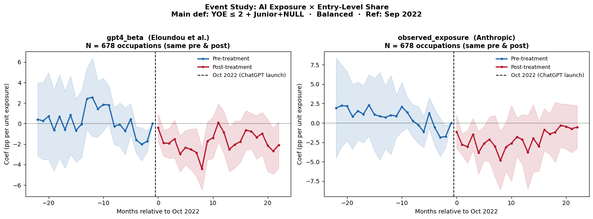
Saved → /Users/khaliun/Documents/USF/ECON696/slide_figures/event_study_main.png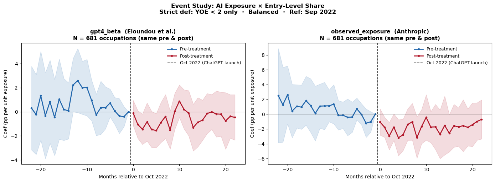
Saved → /Users/khaliun/Documents/USF/ECON696/slide_figures/event_study_strict.png